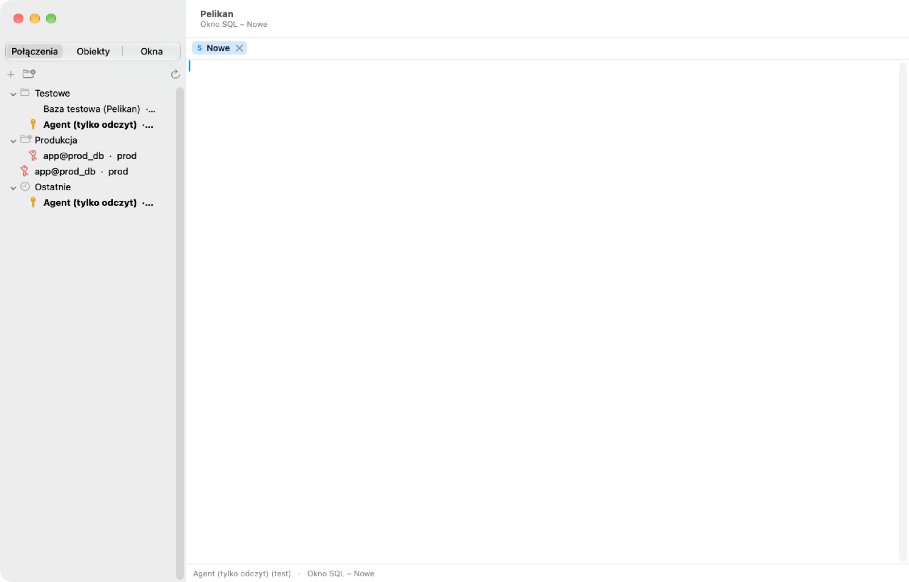
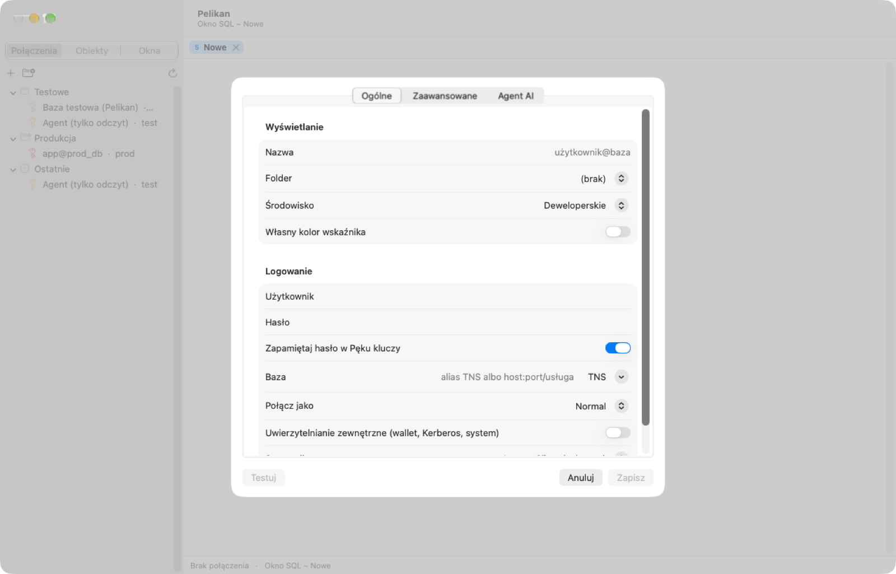
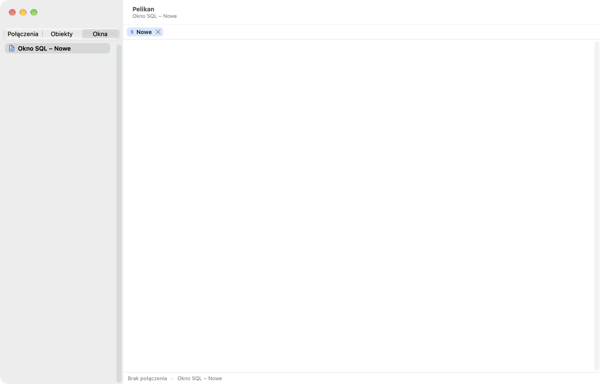

Pelikan — raport postępów
Natywne IDE dla Oracle PL/SQL na macOS · andrzejoles/Pelikan · strona odświeża się co 30 s
Wersja2.1.0
Raport wygenerowany2026-10-23 04:27
Ostatni sygnał2026-10-23 04:27
przed chwilą
Bieżący etap2
Połączenia, SQL Window, Command Window
Zadanie
Etap 2 / Program Window: kompilacja jednostek, lista błędów i ostrzeżeń, wskaźniki, karty jednostek
Postęp
Ogółem (z macierzy funkcji)28.2%
95 z 409 funkcji zrobionych, 3 pominiętych z uzasadnieniem; wagi: ✅/👁 = 1, ⚠️ = 0,75, w toku = 0,25
Według obszaru
PL/SQL Developer33%
84/308
Dodatki SD/DB/DG2%
0/40
utPLSQL0%
0/22
Agenci AI5%
1/21
Platforma i macOS64%
10/18
Według etapu
Etap 083%
Analiza i fundament: źródła, macierz funkcji, ADR, CI, baza testowa, szkielet aplikacji, raport
7/9
Etap 166%
Połączenia, SQL Window, Command Window (sterownik Instant Client, potem thin)
70/128
Etap 224%
Object Browser i Program Window
16/92
Etap 30%
Test Window, debuger, profiler
0/28
Etap 40%
utPLSQL
0/22
Etap 55%
Agenci AI (MCP jak w Bifoldzie)
1/21
Etap 60%
Narzędzia
0/51
Etap 70%
Dodatki z SQL Developer, DBeaver, DataGrip
0/39
Etap 85%
Dopracowanie i wydanie
1/19
Etapy
| Etap | Zakres | Stan |
|---|---|---|
| 0 | Analiza i fundament: źródła, macierz funkcji, ADR, CI, baza testowa, szkielet aplikacji, raport | zakończony |
| 1 | Połączenia, SQL Window, Command Window (sterownik Instant Client, potem thin) | zakończony |
| 2 | Object Browser i Program Window | w toku |
| 3 | Test Window, debuger, profiler | do zrobienia |
| 4 | utPLSQL | do zrobienia |
| 5 | Agenci AI (MCP jak w Bifoldzie) | do zrobienia |
| 6 | Narzędzia | do zrobienia |
| 7 | Dodatki z SQL Developer, DBeaver, DataGrip | do zrobienia |
| 8 | Dopracowanie i wydanie | do zrobienia |
Blokady i pytania do właściciela
Brak blokad.
Zrobione
- ✔ Etap 2 / Program Window: karty jednostek (specyfikacja, ciało…) z przejściem, F8 kompiluje jednostki po kolei w sesji kompilacji z PLSQL_WARNINGS, zatrzymanie przy błędzie i kursor w linii błędu, lista błędów i ostrzeżeń z przejściem, wskaźniki zmieniony (niebieski) / nieskompilowany (żółty); poprawka: margines numerów linii nie zamalowuje widoków nad edytorem — 2 testy (1 na bazie)
- ✔ PR #11 scalony (Object Browser), wersja 2.1.0
- ✔ Etap 2 / Object Browser: MetadataProvider (sesja główna, cache, widoki DBA/ALL, foldery wg wersji — MLE i domeny na 23ai+), drzewo typów z leniwym ładowaniem, wybór użytkownika, filtr (nazwa%, status=, source=), elementy obiektu (kolumny, indeksy, więzy, wyzwalacze, podprogramy, zależności), niepoprawne na czerwono, Ostatnie, menu: Pokaż/Edytuj dane, Edytuj (okno programu), DDL, Opis, Właściwości, Rekompiluj, Usuń, Kopiuj nazwę, Odśwież — 5 testów na bazie
- ✔ Etap 1 zakończony: PR #10 scalony, wersja 2.0.0, szkic wydania v2.0.0 na GitHubie (do publikacji przez właściciela)
- ✔ Katalog konfiguracji połączenia (tnsnames.ora, wallet) przekazywany do Instant Client: alias rozwijany do deskryptora, MY_WALLET_DIRECTORY dla TCPS (test na bazie po aliasie); test sprawdzania połączeń; Etap 1 zamknięty (D21) — P1 bez pełnej realizacji oznaczone jako częściowe
- ✔ Karty dokumentów: menu Zamknij / pozostałe / z lewej / z prawej, zamykanie krzyżykiem i środkowym przyciskiem przez komendę (pytania o zapis i transakcję); edytor: wielkość liter słów kluczowych przy pisaniu (preferencja), podświetlenie bieżącej linii, wcięcie z preferencji — 1 test, sprawdzone ręcznie
- ✔ Okna wykonują się równolegle (test na bazie), edytor zablokowany w trakcie wykonania, wylogowanie z otwartą transakcją pyta (test), rola SYSDBA (test na koncie SYS kontenera), ekran pomocy przy braku Instant Client (pobranie od Oracle, wskazanie katalogu, sterownik thin) — 4 testy
- ✔ Połączenia: tylko do odczytu (blokada DML/DDL/PL/SQL/FOR UPDATE w SQL Window, Command Window i siatce), potwierdzanie zmian na produkcji (preferencja), połączenie okna na pasku stanu z menu wyboru i przypięciem — 4 testy
- ✔ Edytor: komentarz linii, wcięcia, wielkie/małe litery bez literałów, usuwanie końcowych spacji, powielenie linii, Przejdź do linii, Znajdź i zamień (regex z $1/\t, całe słowa, wielkość liter, zachowanie wielkości, zaznaczenie, kod/komentarze/literały), Znajdź następne/poprzednie (F3), Historia poleceń (Ctrl+E) z filtrem i wstawianiem wielu; zmiany z komend cofalne (⌘Z) — 8 testów
- ✔ PR #9 scalony; szkic wydania v1.9.0 na GitHubie (DMG, PKG, zip, appcast.xml) — do publikacji przez właściciela
- ✔ Wydania jak w Bifoldzie: stały podpis „Pelikan Self-Signed” (osobny pęk kluczy), make installer (DMG i PKG z licencjami zewnętrznymi i kontrolą danych w pakiecie), Sparkle 2.10.0 z kluczem EdDSA w Pęku kluczy i menu „Sprawdź uaktualnienia…”, make draft-release (zip, appcast.xml, tag, szkic wydania), docs/WYDANIA.md; instalatory 1.8.0 zbudowane i sprawdzone lokalnie
- ✔ PR #8 scalony (sterownik thin), wersja 1.8.0
- ✔ Sterownik thin (OracleNIO): EZConnect i alias TNS, SYSDBA, proxy, bindy IN/OUT, LOB jako lokator z limitem (CLOB w AL16UTF16), NUMBER/DATE/TIMESTAMP dekodowane z surowych bajtów bez utraty precyzji, metadane kolumn, błędy ORA, DBMS_OUTPUT, SQL Window na thin; Przerwij wyszarzone (brak w API); 1 mln wierszy w 4,3 s (Instant Client 1,2 s); OracleNIO przypięty do commitu z poprawką dla Swift 6.4 (D20) — 9 testów (6 na bazie)
- ✔ PR #7 scalony (tunel SSH), wersja 1.7.0
- ✔ Tunel SSH: systemowy ssh -L (klucz, agent SSH, ~/.ssh/config, ProxyJump, known_hosts), losowy port lokalny, przepisywanie connect stringu (EZConnect, tcps, deskryptor, alias TNS), tunel współdzielony przez sesje i zamykany z ostatnią, karta „Tunel SSH” w definicji połączenia i test połączenia przez tunel; serwer SSH testów w kontenerze (testdb.sh ssh-up); DatabaseError z czytelnym komunikatem — 5 testów (2 przez prawdziwy tunel)
- ✔ PR #6 scalony (pliki, preferencje, klawiatura), wersja 1.6.0
- ✔ Pliki i preferencje: Otwórz / Zapisz / Zapisz jako / Otwórz ponownie (lista ostatnich), kodowanie UTF-8/UTF-16/Windows-1250 i CRLF zachowane przy zapisie, typ okna z rozszerzenia, otwieranie z Findera i przeciąganie plików, pytania przy zamykaniu (niezapisane zmiany, otwarta transakcja, sesja okna zamykana) i przy wyjściu; okno Preferencji (Ogólne, Okno SQL, Edytor, Klawiatura z nagrywaniem skrótów i konfliktami, Oracle — katalog Instant Client), wygląd jasny/ciemny/systemowy, ⌘W w oknach pomocniczych — 7 testów
- ✔ PR #5 scalony (Command Window), wersja 1.5.0
- ✔ Command Window — interfejs: karta Dialog (konsola z kolorami, linia poleceń z historią strzałkami, wielowierszowe SQL do „;” i PL/SQL do „/”, kolejka poleceń wpisanych w trakcie wykonania), karta Edytor (F8 wykonuje i przełącza na Dialog), pasek SET (Echo, Feedback, Verify, Heading, Timing, Output, Termout); SET z wieloma opcjami w linii — sprawdzone ręcznie
- ✔ Command Window — silnik SQL*Plus: SET (ECHO, FEEDBACK, HEADING, PAGESIZE, COLSEP, SERVEROUTPUT, TIMING, VERIFY, DEFINE, ESCAPE, CONCAT…), DEFINE/UNDEFINE/ACCEPT, &/&&/&1, VARIABLE/EXEC/PRINT/AUTOPRINT, COLUMN FORMAT/HEADING/NEW_VALUE, PROMPT, PAUSE, @/@@/START z parametrami, SPOOL, CD, DESCRIBE (tabele, pakiety, synonimy), SHOW ERRORS/USER/RELEASE/ALL, WHENEVER SQLERROR, CONNECT (zapisane i tymczasowe), EXIT, wyniki tekstowe — 9 testów (5 na bazie)
- ✔ PR #4 scalony (siatka: strony, sortowanie, eksport, edycja, Large Data Editor), wersja 1.4.0
- ✔ Large Data Editor: CLOB/BLOB/RAW/LONG/JSON z komórki (podwójne kliknięcie, menu, ⌘⌥L), pełna treść ponownie pobierana po ROWID gdy obcięta w siatce, rozpoznanie formatu (tekst, XML, JSON, HTML, PNG/JPEG/GIF, PDF), Tekst/Hex/Obraz/PDF, Formatuj JSON i XML, wczytanie/zapis pliku, zmiana CLOB i BLOB zatwierdzana przez Post — 3 testy (1 na bazie, CLOB 2,24 mln znaków)
- ✔ Siatka — edycja danych (UG 7.6): tabela ustalana z ROWID (także przy złączeniach), kolumny z aliasem i wyrażenia tylko do odczytu, zmiana komórek z konwersją typów, Wstaw/Usuń rekord, Zatwierdź zmiany (UPDATE/INSERT RETURNING ROWID/DELETE) z odświeżeniem wartości z wyzwalaczy, podgląd SQL zmian, anulowanie, czerwony tekst przy przekroczeniu rozmiaru, przejście do komórki z błędem — 9 testów (5 na bazie), sprawdzone ręcznie
- ✔ Siatka: Następna/Ostatnia strona, sortowanie klikiem nagłówka (Shift — wtórne), widok pojedynczego rekordu, kopiowanie (z nagłówkiem, nagłówek, lista IN, jako CSV/HTML/XML/SQL), eksport do pliku (CSV, TSV, HTML, XML, SQL, xlsx), Kopiuj do Excela (arkusz na wynik + SQL) — 13 testów
- ✔ PR #3 scalony (edytor i SQL Window), CI zielone na macOS i Linuksie
- ✔ Przerwanie zapytania (⌘. / Shift+Esc) sprawdzone ręcznie i testem; licznik wierszy na pasku stanu aktualny przy dociąganiu; siatka 1 mln wierszy przewijana w aplikacji
- ✔ Testy wydajności (Release): podświetlanie pakietu 50 000 linii 18 ms, klawisz 0,19 ms, siatka 1 mln wierszy 1,2 s / 326 MB, porcja przy przewijaniu 1,4 ms — wszystkie cele spełnione; logika podświetlania przeniesiona do PelikanSQL (IncrementalLexer, 3 testy zgodności z pełnym leksowaniem)
- ✔ Etap 1 / SQL Window sprawdzone ręcznie na bazie testowej: F8 i ⇧⌘↩, okno zmiennych (Enter wykonuje), karty wyników z tytułem -- tab= i &Count, czerwona karta błędu z kursorem na pozycji ORA, Output z polskimi znakami, transakcja na pasku stanu, ROLLBACK ⌥⌘⌫. Poprawione: pętla układu przy starcie, edytor TextKit 2 (niewidoczny tekst), fokus po arkuszach, hasło pytane raz na uruchomienie, komendy wyłączone blokowane w invoke (także dla agenta)
- ✔ Etap 1 / SQL Window (interfejs, w toku): edytor TextKit 2 z podświetlaniem przyrostowym i numerami linii, siatka wyników NSTableView z dociąganiem i kopiowaniem, karty wyników i Output, okno Zmienne (listy, zapytania, zależności, checkbox, multiselect) — buduje się, jeszcze niesprawdzone ręcznie
- ✔ Etap 1 / SQL Window (silnik): wybór poleceń (zaznaczenie / AutoSelect / Ctrl+F8), okno zmiennych (&, &&, &"Nazwa", &<opcje>, :bind, Jasper), karty wyników z tytułem z -- tab= i &Count, dyrektywa Records=, dociąganie, DBMS_OUTPUT, transakcje (LOCAL_TRANSACTION_ID), COMMIT/ROLLBACK, pozycja błędu w tekście, historia okna i globalna bez haseł — 11 testów (6 na bazie)
- ✔ Etap 1 / połączenia (interfejs): Lista połączeń (foldery, reguły, Ostatnie, stan klucza, połączenie główne, menu), okno definicji połączenia z testem, okno logowania, pytanie o hasło i nowe hasło (ORA-28001), pytanie o transakcje przy wylogowaniu i zamknięciu aplikacji (D10), sprawdzanie połączeń co 60 s — sprawdzone na bazie testowej
- ✔ Etap 1 / połączenia (model): parser tnsnames.ora (IFILE, rozwinięcie do EZConnect dla thin), ConnectionStore (foldery z regułami * ?, środowisko dev/test/prod, kolory, eksport/import bez haseł), hasła w Pęku kluczy (Touch ID opcjonalnie), SessionManager (multi/dual/single, sesja kompilacji, pytanie o hasło, ORA-01017, ORA-28001, skrypt inicjalizacji), ustawienia — 33 nowe testy
- ✔ Szkielet aplikacji: XcodeGen, okno główne w układzie PL/SQL Developer, rejestr komend (dwa profile skrótów, komendy zapowiedziane wyszarzone do etapu), menu z rejestru, paleta komend (⇧⌘P), Lista okien, docs/SKROTY.md generowany z rejestru
- ✔ ADR 0001–0005 (sterowniki z macierzą możliwości, parser, edytor TextKit 2, siatka NSTableView, okna z kartami), ARCHITECTURE.md, SECURITY.md (model zagrożeń), PLAN.md (plan Etapu 1), CLAUDE.md, THIRD_PARTY.md, GLOSSARY.md; decyzje D13–D15
- ✔ Analiza utPLSQL (API, mechanizm wtyczek), SQL Developer for VS Code 23.4–26.3, SQL Developer, SQLcl, DBeaver, DataGrip → docs/research/utplsql.md, gap-analysis.md, behaviour.md; macierz rozszerzona do 412 funkcji (UT, AI, SD, SC, DB, DG, MAC)
- ✔ Analiza PL/SQL Developer 17: podręcznik 17.0 (322 s.) i nowości 7.1–17.0 streszczone w docs/research/plsqldev-17.md; macierz funkcji docs/FEATURES.md — 319 wierszy (PD + infrastruktura)
- ✔ CI zielone (PR #1): Linux — Oracle Free 26ai w kontenerze + utPLSQL + 44 testy (w tym 12 integracyjnych sterownika); macOS — 45 testów jednostkowych
- ✔ PelikanSQL: lekser (przyrostowy, UTF-16), dzielenie skryptu (SQL/PL-SQL/SQL*Plus), klasyfikacja poleceń, zmienne & / :bind / JasperReports $P{} $P!{} $X{} — 32 testy jednostkowe zielone
- ✔ Sterownik Instant Client (ODPI-C 26.0 + Instant Client 23.26.2): łączenie, zapytania z typami (NUMBER bez utraty precyzji, daty, LOB, JSON, ROWID, interwały), dociąganie porcjami, transakcje, zmienne wiązane IN/OUT, REF CURSOR, niejawne wyniki, błędy ORA z pozycją, ostrzeżenia kompilacji, przerwanie (Break), MODULE/ACTION — 12 testów integracyjnych zielonych
- ✔ Baza testowa: Oracle AI Database 26ai Free (23.26.3) w kontenerze, schematy PELIKAN_TEST/PELIKAN_AGENT, obiekty testowe (pakiety, błędny pakiet, wyzwalacz, typy, kolekcje, LOB, JSON, domena, moduł MLE), utPLSQL v3.2.3 — przykładowe testy uruchomione (5 testów, 1 celowo nieudany)
Następne kroki
- Uruchomić aplikację i sprawdzić SQL Window ręcznie (F8, Ctrl+F8, zmienne, siatka, Output, COMMIT/ROLLBACK), zrzuty ekranu
- Testy wydajności: siatka 1 mln wierszy, edytor 50 000 linii (Release)
- PR etap-1/edytor-sql-window → scalenie
- Command Window, profile klawiatury i preferencje, eksport wyników, Large Data Editor, edycja siatki z ROWID
- Tunel SSH, sterownik thin (OracleNIO), szkic wydania (podpis, DMG/PKG, Sparkle)
Znane ograniczenia
- Oracle 19c i starsze nie mają obrazów arm64 — testy automatyczne tylko na 26ai; zgodność ze starszymi przez zapytania słownika odporne na brak kolumn i widoków
- Runner GitHub macos-latest to macOS 26.6 / Swift 6.3 — budowanie aplikacji z celem macOS 27 w CI do sprawdzenia
- Ctrl+F8 przechwytuje macOS (fokus do menu statusu) — działa odpowiednik ⇧⌘↩; skrót systemowy można wyłączyć w Ustawieniach (D17)
- Instant Client w Pobranych: przy pierwszym połączeniu macOS pyta o dostęp do folderu Pobrane — zgoda należy do użytkownika; można wskazać inny katalog w ustawieniach (D18)
- Tunel SSH tylko z kluczem/agentem — hasło SSH nieobsługiwane (wymagałoby hasła w środowisku procesu; D19)
- Sterownik thin: bez TCPS/wallet, uwierzytelniania zewnętrznego, zmiany wygasłego hasła i przerwania wykonania (D20)
Ostatnie decyzje
Pełna lista: docs/DECISIONS.md
D21 · 2026-10-23 — Etap 1 zamknięty; P2/P3 Etapu 1 przechodzą do kolejnych etapów
Kryteria odbioru spełnione: praca z zapytaniami z klawiatury (F8/⇧⌘↩, zmienne, siatka, Command Window, historia, Znajdź i zamień), 1 mln wierszy (model 1,2 s, przewijanie z dociąganiem sprawdzone), brak blokad UI przy długim zapytaniu (wykonanie async, równoległe okna, przerwanie). Wiersze P1 bez pełnej realizacji mają stan „⚠️ częściowo” z opisem braku. Pozostałe wiersze Etapu 1 o priorytecie P2/P3 (m.in. QBE, sumy, filtr kolumn, Auto Refresh, Direct Query Export, NLS aplikacji, LDAP, EBR) są realizowane przy okazji etapów, które dotykają tych okien, a najpóźniej w audycie Etapu 8 — plan nie blokuje Etapu 2 (Object Browser i Program Window), od którego zależą kolejne etapy.
D20 · 2026-10-23 — OracleNIO z commitu na main; NUMBER/DATE dekodowane przez Pelikana
Wydanie 1.0.0-rc.4 nie kompiluje się w Swift 6.4 (makro `@TaskLocal` z `@usableFromInline` daje błędny atrybut); poprawka jest na gałęzi main (commit 7cda9e0, wymaga swift-tools 6.3 — CI Linux podniesiony do Swift 6.3). Zależność przypięta do tego commitu (`revision:`), zmiana na wydanie 1.0.0 po jego publikacji. OracleNIO dekoduje NUMBER przez `Double` i DATE przez `Date`, co gubi cyfry i strefy — Pelikan czyta surowe bajty (format wykładnik + cyfry o podstawie 100; 7/11/13 bajtów dat) jak w sterowniku Instant Client (NUMBER jako tekst). Metadane kolumn (typ, rozmiar, precyzja) i pozycja błędu są w OracleNIO polami wewnętrznymi — odczyt przez `Mirror` z wartościami zastępczymi, gdy pól nie ma. Sterownik thin nie obsługuje: TCPS/wallet, uwierzytelniania zewnętrznego, zmiany wygasłego hasła, przerwania wywołania (brak w API) — komunikat albo wyszarzenie z podpowiedzią „przełącz na Instant Client”.
D19 · 2026-10-23 — Tunel SSH przez systemowy `ssh`, bez haseł
Tunel (funkcja z SQL Developer/DBeaver; PL/SQL Developer jej nie ma) uruchamia `/usr/bin/ssh -N -L 127.0.0.1:port:host:port` z `BatchMode=yes` i `ExitOnForwardFailure=yes`. Dzięki temu działają `~/.ssh/config`, ProxyJump, agent SSH (klucze w Pęku kluczy przez `ssh-add --apple-use-keychain`) i weryfikacja `known_hosts` dokładnie jak w Terminalu. Biblioteka SSH w Swifcie (swift-nio-ssh) wymagałaby własnej obsługi known_hosts, agentów i konfiguracji. Hasło SSH nie jest obsługiwane: przekazanie go do `ssh` wymagałoby `SSH_ASKPASS` z hasłem w środowisku albo pliku, co łamie zasadę „hasła tylko w Pęku kluczy” — komunikat prosi o klucz. Port lokalny losowy (bind na 0), tunel współdzielony przez sesje połączenia, zamykany z ostatnią sesją i przy wyjściu z aplikacji. Testy: kontener sshd w sieci Docker bazy testowej (`scripts/testdb.sh ssh-up`, klucz jednorazowy w `.testdb/ssh`).
D18 · 2026-10-22 — Instant Client: wyszukiwanie leniwe, bez sięgania do Pobranych, gdy niepotrzebne
Odczyt `~/Downloads` wywołuje pytanie systemu o dostęp do folderu (TCC). `InstantClientLocator` sprawdza kolejno: katalog z ustawień, `PELIKAN_OCI_LIB_DIR`, Homebrew / `/usr/local` / `/opt/oracle`, dopiero potem Pobrane i Aplikacje. Zgoda w oknie systemowym należy do użytkownika — Pelikan (ani agent budujący) jej nie klika. Do testów lokalnych kopia klienta w `build/instantclient` (ignorowane przez git).
D17 · 2026-10-22 — Wszystkie skróty komendy działają; Ctrl+F8 koliduje z macOS
Menu macOS pokazuje jeden skrót na pozycję, a komendy mają po dwa (profil PL/SQL Developer + odpowiednik z ⌘). Pierwszy skrót trafia do menu, pozostałe obsługuje lokalny monitor klawiatury (`MenuBuilder.handleKeyDown`) — tylko w oknie głównym bez arkusza i tylko dla komend dostępnych w danym stanie. Ctrl+F8 jest w macOS domyślnie skrótem „Przenieś fokus do menu statusu” (Ustawienia › Klawiatura › Skróty) i nie dociera do aplikacji; Pelikan nie zmienia ustawień systemu — w SKROTY.md opisany jest odpowiednik ⇧⌘↩ i sposób wyłączenia skrótu systemowego przez użytkownika.
D16 · 2026-10-22 — `&&` zależnie od okna: SQL Window = dosłowne `&`, Command Window = zmienna zapamiętywana
UG 12.3 (składnia zmiennych SQL Window, Report Window i szablonów) podaje `&&` jako sposób zapisu znaku `&` w tekście (`'R&&D'`), a w SQL*Plus `&&x` to zmienna o wartości zapamiętanej (DEFINE). `Variables.find/prepare(syntax:)`: `.sqlWindow` (domyślnie) — `&&` → `&`; `.sqlplus` (Command Window) — `&&x` jako zmienna trwała.
D15 · 2026-10-22 — Jedno okno główne z kartami zamiast natywnych kart macOS
Natywne karty macOS to osobne okna — wspólne panele (Object Browser, Window List) musiałyby być w każdym oknie. Jedno okno główne z własnym paskiem kart (SDI wzorca), odłączanie dokumentu do osobnego okna (ADR 0005).
D14 · 2026-10-22 — Edytor bez STTextView
STTextView ma licencję GPLv3 lub komercyjną — niezgodną z dystrybucją Pelikana na MIT bez zakupu (PROMPT §13). Edytor własny na TextKit 2 (ADR 0003).
D13 · 2026-10-22 — Szkice wydań od Etapu 1
PROMPT §8 przewiduje szkic wydania na koniec każdego etapu. Etap 0 to fundament bez używalnej aplikacji (szkielet okna), więc pierwszy szkic wydania (z podpisem, DMG/PKG, Sparkle — przeniesione z Etapu 8) powstaje na koniec Etapu 1.
D12 · 2026-10-22 — AutoSelect statement domyślnie włączone
Domyślna wartość preferencji wzorca nie jest opisana w podręczniku (do weryfikacji). Pelikan domyślnie wykonuje polecenie pod kursorem (bez zaznaczenia), żeby przypadkiem nie uruchomić całego skryptu; F8 z zaznaczeniem wykonuje zaznaczenie, a osobna komenda „Wykonaj wszystko” — wszystkie polecenia okna.
D11 · 2026-10-22 — Funkcje pominięte w zakresie
- ODBC Importer — ODBC na macOS wymaga osobnego menedżera sterowników i sterowników źródeł, mało przydatne przy Oracle; zastępują go Text/Excel Importer, kreator importu i przenoszenie danych (gap-analysis §5). - APEXlang (SQL Developer for VS Code) — wymaga APEX w bazie, poza codzienną pracą z PL/SQL. - Liquibase (`lb` w SQLcl) — wymaga Javy i biblioteki Liquibase (zależność spoza Swift); do rozważenia jako opcja korzystająca z zainstalowanego SQLcl. - Unit Test SQL Developera i Data Modeler — utPLSQL i diagramy ER pokrywają potrzeby. - AI Assistant wzorców, wtyczki i mechanizm wtyczek — zgodnie z PROMPT §3.2 (rejestr komend nie utrudnia dodania wtyczek później). Każdy pominięty wiersz macierzy ma stan „pominięte (powód)” i nie liczy się do postępu.
D10 · 2026-10-22 — Zamknięcie z otwartą transakcją: domyślnie pytanie, nie COMMIT
Wzorzec domyślnie zatwierdza otwartą transakcję przy wylogowaniu (UG 23.1). PROMPT §3.1 wymaga ostrzeżenia o niezatwierdzonej transakcji przy zamykaniu okna i aplikacji, a §4.2 p.6 — ostrożności na prod. Pelikan domyślnie pyta (Commit / Rollback / Anuluj); preferencja „Wylogowanie z otwartą transakcją” pozwala wybrać zachowanie wzorca.
Macierz funkcji
Legenda: ✅ zweryfikowane testem automatycznym · 👁 sprawdzone ręcznie w działającej aplikacji (zrzuty ekranu)
· ⚠️ zaimplementowane, bez weryfikacji na żywo (powód w kolumnie) · w toku · do zrobienia · pominięte (z uzasadnieniem)
wierszy: 412
| ID | Funkcja | Etap | Stan |
|---|---|---|---|
PL-INFRA-001 | Raport postępów HTML (status.json, macierz, git, testy) w docs/progress i ~/Pelikan-raport | 0 | 👁 sprawdzone ręcznie |
PL-INFRA-002 | CI GitHub Actions: macOS (testy jednostkowe) i Linux z Oracle Free + utPLSQL | 0 | ✅ test |
PL-INFRA-003 | Baza testowa w kontenerze (Oracle Free 26ai), schematy, obiekty testowe, utPLSQL (scripts/testdb.sh) | 0 | ✅ test |
PL-INFRA-004 | Wersja z historii scalonych PR (scripts/version.sh) | 0 | ✅ test |
PL-INFRA-005 | Szkielet aplikacji AppKit (XcodeGen), okno główne, menu z rejestru komend | 0 | 👁 sprawdzone ręcznie |
PL-INFRA-006 | Rejestr komend z poziomem dostępu agenta i opisem skutków; docs/SKROTY.md generowany | 0 | ✅ test |
PL-INFRA-007 | Podpis stały, instalatory DMG i PKG, Sparkle, szkic wydania (scripts/release.sh) | 8 | do zrobienia |
PL-INFRA-008 | Tłumaczenia pl (źródłowy), en, de, es, uk w String Catalog + test kompletności | 8 | do zrobienia |
PL-INFRA-009 | Warstwa bazy za protokołem DatabaseSession, bez AppKit, testowana na Linuksie | 0 | ✅ test |
PL-INFRA-010 | Instrukcja użytkownika w aplikacji (pl + tłumaczenia) | 8 | do zrobienia |
PD-CONN-001 | Sterownik Instant Client (ODPI-C): łączenie, zapytania, typy, przerwanie | 1 | ✅ test |
PD-CONN-002 | Okno logowania (użytkownik, hasło, baza, Connect as) z historią i anulowaniem (praca bez połączenia) | 1 | 👁 sprawdzone ręcznie |
PD-CONN-003 | Connection List: foldery, podfoldery, połączenia jawne i dopasowane regułami (wzorce * ?), folder Recent | 1 | 👁 sprawdzone ręcznie |
PD-CONN-004 | Definicja połączenia: nazwa, obraz, użytkownik, baza, hasło (Pęk kluczy, puste = pytaj), Connect as, Identified externally | 1 | 👁 sprawdzone ręcznie |
PD-CONN-005 | Kolor połączenia i wskaźnik (pasek, okno, Window List, tło); reguły Connection Indicators user@db | 1 | ⚠️ częściowo (kolor i środowisko na liście; bez tła okna i reguł) |
PD-CONN-006 | Środowisko połączenia dev/test/prod z ostrzeżeniami przy zmianach na prod | 1 | ✅ test |
PD-CONN-007 | Połączenie tylko do odczytu (blokada zmian obiektów i danych) | 1 | ✅ test |
PD-CONN-008 | Skrypt inicjalizacji sesji i komunikat przy logowaniu; Test połączenia | 1 | ✅ test |
PD-CONN-009 | Edition (EBR) i Workspace (DBMS_WM) połączenia | 1 | do zrobienia |
PD-CONN-010 | Connect on startup; eksport i import definicji połączeń (bez haseł) | 1 | w toku |
PD-CONN-011 | TNS: tnsnames.ora, sqlnet.ora, TNS_ADMIN (katalog konfiguracji per połączenie), EZConnect | 1 | ✅ test |
PD-CONN-012 | Wallet (mTLS, Autonomous Database) | 1 | ⚠️ częściowo (MY_WALLET_DIRECTORY z katalogu połączenia; bez testu TCPS) |
PD-CONN-013 | LDAP (directory naming) | 1 | do zrobienia |
PD-CONN-014 | Uwierzytelnianie zewnętrzne / Kerberos | 1 | do zrobienia |
PD-CONN-015 | Role SYSDBA, SYSOPER, SYSBACKUP, SYSDG, SYSKM, SYSASM | 1 | ✅ test |
PD-CONN-016 | Proxy user (pośrednik[schemat]) | 1 | w toku |
PD-CONN-017 | Zmiana wygasłego hasła (ORA-28001) i Set Password (w bazie i w definicji) | 1 | ✅ test |
PD-CONN-018 | Wiele połączeń naraz; połączenie główne (pogrubione, dwuklik, Set Main Connection [to current]) | 1 | ✅ test |
PD-CONN-019 | Połączenie okna na pasku stanu, zmiana połączenia okna, przypięte / nieprzypięte (preferencja domyślna) | 1 | ✅ test |
PD-CONN-020 | Tryb sesji Multi / Dual / Single; osobna sesja kompilacji | 1 | ✅ test |
PD-CONN-021 | Wykonywanie okien równolegle (wątki), kursor „wykonywanie”, blokada edycji okna w trakcie | 1 | ✅ test |
PD-CONN-022 | Menu połączenia: otwórz okno typu, Show/Close/Reconnect All Windows, Connect, Disconnect, Set current schema | 1 | w toku |
PD-CONN-023 | Sprawdzanie połączenia co 60 s (wszystkie sesje opcjonalnie), reakcja na utratę połączenia | 1 | ✅ test |
PD-CONN-024 | Wylogowanie z otwartą transakcją: COMMIT / ROLLBACK / pytaj (w Pelikanie domyślnie pytaj) | 1 | ✅ test |
PD-CONN-025 | Zmienne środowiska Oracle per aplikacja (NLS_LANG, NLS_DATE_FORMAT…), NLS sesji | 1 | do zrobienia |
PD-CONN-026 | Automatyczne zamykanie nieużywanych połączeń; pamiętanie Recent | 1 | do zrobienia |
PD-CONN-027 | Kill sesji okna (Session > Kill) gdy Break nie działa | 1 | do zrobienia |
PD-CONN-028 | Sterownik thin (OracleNIO) wybierany w połączeniu; funkcje niedostępne wyszarzone z podpowiedzią | 1 | ✅ test |
PD-CONN-029 | Wykrywanie Instant Client, ścieżka w ustawieniach, ekran pomocy przy braku | 1 | ✅ test |
PD-CONN-030 | Tunel SSH do bazy (z DBeaver; ważne na Macu) | 1 | ✅ test |
PD-SQLW-001 | Dzielenie skryptu na polecenia (`;`, `/`, bloki PL/SQL, CREATE z ciałem) jak SQL*Plus | 1 | ✅ test |
PD-SQLW-002 | Wykonanie: zaznaczenie → tylko zaznaczony tekst; wiele poleceń → wszystkie, wyniki w kartach | 1 | ✅ test |
PD-SQLW-003 | AutoSelect statement / Execute current statement (polecenie pod kursorem) | 1 | ✅ test |
PD-SQLW-004 | Wynik w siatce z pobieraniem pierwszej strony i dociąganiem (Next Page, Last Page, „(more…)”) | 1 | ✅ test |
PD-SQLW-005 | Break w trakcie wykonania i w trakcie pobierania (zostają pobrane wiersze) | 1 | ✅ test |
PD-SQLW-006 | Refresh result set (ponowne wykonanie karty) i Auto Refresh okna co n s | 1 | do zrobienia |
PD-SQLW-007 | Historia poleceń okna (wstecz/dalej) | 1 | ✅ test |
PD-SQLW-008 | Karta Statistics (statystyki wykonania) | 3 | do zrobienia |
PD-SQLW-009 | Karta Output z DBMS_OUTPUT (bufor, limit, włącz/wyłącz, czyszczenie, wskaźnik nowego wyjścia) | 1 | ✅ test |
PD-SQLW-010 | Tytuł karty z komentarza `-- tab=…` i `&Count` | 1 | ✅ test |
PD-SQLW-011 | Dyrektywy komentarzy: Excel=, CSV=, Records=, Totals=, AltRowColor= | 1 | w toku |
PD-SQLW-012 | Zapis .sql (bieżące polecenie / z historią), Load do istniejącego okna | 1 | ✅ test |
PD-SQLW-013 | Standard Queries dla tabel/widoków w menu kontekstowym | 6 | do zrobienia |
PD-SQLW-014 | AutoCommit SQL (domyślnie wyłączony), AutoCommit posted records | 1 | ✅ test |
PD-SQLW-015 | Powiadomienie (dźwięk) o końcu długiego zapytania; czas wykonania na pasku stanu (hh:mm:ss > 100 s) | 1 | w toku |
PD-SQLW-016 | Druk okna (SQL + siatka, zaznaczone wiersze) | 8 | do zrobienia |
PD-SQLW-017 | Pinning wyników (Shift+klik karty), Pin All Result Sets, Clear Tab Results | 1 | do zrobienia |
PD-SQLW-018 | Direct Query Export do pliku (CSV, TSV, HTML, XML, Excel, SQL, schowek) bez wyświetlania | 1 | do zrobienia |
PD-SQLW-019 | Linked Queries: tabele nadrzędne/podrzędne z FK, master/detail ze zmiennymi `:m_…`, Custom | 6 | do zrobienia |
PD-SQLW-020 | Compare records (identyczne/różne, kolumna/rekord, wielkość liter) | 6 | do zrobienia |
PD-SQLW-021 | Compare result sets (dwie karty naraz, podświetlenie różnic, układ pionowy/poziomy) | 6 | do zrobienia |
PD-SQLW-022 | Query By Example (wiersz kryteriów, wyrażenia, preferencje QBE) | 1 | do zrobienia |
PD-SQLW-023 | Wyróżnienie całego słowa przy błędzie, przejście do pozycji błędu ORA | 1 | ✅ test |
PD-SQLW-024 | Pytanie o zapis nowego okna przy zamykaniu; ostrzeżenie o niezatwierdzonej transakcji przy zamykaniu okna i aplikacji | 1 | ✅ test |
PD-SQLW-025 | Wklejenie tekstu na pusty obszar tworzy SQL Window | 1 | do zrobienia |
PD-SQLW-026 | Maksymalny rozmiar wyniku (MB) z pytaniem przed dalszym pobieraniem | 1 | do zrobienia |
PD-GRID-001 | Siatka płynna przy milionach wierszy (dociąganie stronami, bez zacięć) | 1 | ✅ test |
PD-GRID-002 | NULL na kolorowym tle (osobny kolor dla kolumn obowiązkowych), naprzemienne wiersze | 1 | 👁 ręcznie |
PD-GRID-003 | `<CLOB>`, `<BLOB>`, `<Long>`… z przyciskiem komórki → Large Data Editor; przycisk dla tekstu > 20 znaków | 1 | ✅ test |
PD-GRID-004 | Liczby z pełną precyzją Oracle; układ liczb (lewo/prawo/formatowane/z separatorem tysięcy) | 1 | ⚠️ częściowo (pełna precyzja; bez wyboru układu liczb) |
PD-GRID-005 | Daty i znaczniki czasu wg formatu (NLS / własny), kalendarz przy edycji DATE | 1 | ⚠️ częściowo (formaty z preferencji; bez kalendarza) |
PD-GRID-006 | Kursor zagnieżdżony `<Cursor>` → nowe okno z wynikiem | 1 | do zrobienia |
PD-GRID-007 | Zaznaczanie wierszy, kolumn i bloków komórek; Select All; przenoszenie kolumn | 1 | ⚠️ częściowo (wiersze, przenoszenie kolumn; bez bloków komórek) |
PD-GRID-008 | Blokada przewijania kolumn i wierszy (Scroll lock) | 1 | do zrobienia |
PD-GRID-009 | Sortowanie lokalne klikiem nagłówka (rosnąco/malejąco/brak, wtórne, wielkość liter) | 1 | ✅ test |
PD-GRID-010 | Single Record View (kolumna, wartość, typ, komentarz; poprzedni/następny rekord) | 1 | ⚠️ częściowo (bez komentarzy kolumn) |
PD-GRID-011 | Filtr kolumn (nazwy, typy, obowiązkowe, PK/UK/FK, historia, wklejanie wielu linii) | 1 | do zrobienia |
PD-GRID-012 | Align (szerokość wg nagłówka/treści, wysokość, szablony wyrównania z kolejnością, auto-align), Hide Editor, Adjust Window width | 1 | do zrobienia |
PD-GRID-013 | Eksport zaznaczenia: CSV, TSV, HTML, XML, SQL (INSERT), do pliku i do schowka | 1 | ✅ test |
PD-GRID-014 | Excel (xlsx; „Copy all” — arkusz na wynik; z SQL na osobnym arkuszu, formatowanie, kolory) | 1 | ✅ test |
PD-GRID-015 | Copy, Copy with Header, Copy Header, Copy as Expression List; kopiowanie także jako HTML | 1 | ✅ test |
PD-GRID-016 | Column to files (kolumna → plik na wiersz, katalog i nazwa z wyrażeń) | 6 | do zrobienia |
PD-GRID-017 | Edycja wyniku z ROWID lub FOR UPDATE: Edit data, Insert record, Delete record, Post changes | 1 | ✅ test |
PD-GRID-018 | Tabela edytowana ustalana z ROWID (złączenia), kolumny z aliasem tylko do odczytu, kolumny niewidoczne edytowalne | 1 | ✅ test |
PD-GRID-019 | Czerwony tekst przy przekroczeniu rozmiaru/precyzji; przeliczanie kolumn wirtualnych; wartości z wyzwalaczy po Post | 1 | w toku |
PD-GRID-020 | Podgląd SQL zmian siatki (SQL Window / Command Window / schowek) przed Post | 1 | ✅ test |
PD-GRID-021 | Przejście do komórki z błędem po INSERT/UPDATE | 1 | ✅ test |
PD-GRID-022 | Informacje słownika w siatce: typ, NOT NULL, komentarz na pasku; listy wartości z CHECK IN i FK do małych tabel | 1 | do zrobienia |
PD-GRID-023 | LOB pobierane na żądanie (preferencja) | 1 | do zrobienia |
PD-GRID-024 | Sumy kolumn (Sum/Count/Avg/Min/Max), trwałe po ponownym wykonaniu | 1 | do zrobienia |
PD-GRID-025 | Ctrl +/− rozmiar czcionki siatki | 1 | do zrobienia |
PD-GRID-026 | Wielkie/małe litery klawiszem w edytowalnej siatce | 1 | do zrobienia |
PD-GRID-027 | Numer wiersza w kopiowaniu/eksporcie (preferencja) | 1 | do zrobienia |
PD-VAR-001 | Zmienne podstawiania `&nazwa`, `&&nazwa`, wiele wystąpień, okno pytania o wartości | 1 | ✅ test |
PD-VAR-002 | Zmienne wiązane `:nazwa` w SQL Window (typ domyślnie tekst), pomijanie `:new`/`:old` w wyzwalaczach | 1 | ✅ test |
PD-VAR-003 | Składnia opcji `&"Nazwa"` i `&<name= hint= type= required= default= ifempty= uppercase= lowercase= readonly= hidden= list= description= restricted= multiselect= checkbox= prefix= suffix= lines= editor=>` | 1 | ✅ test |
PD-VAR-004 | Listy zależne (`:inna_zmienna` w zapytaniu listy, `&zmienna` w listach) | 1 | do zrobienia |
PD-VAR-005 | Przycisk `&` na pasku stanu wyłącza podstawianie (także zmiennych wiązanych) | 1 | 👁 ręcznie |
PD-VAR-006 | `&&` jako literał `&` w tekście (np. 'R&&D') | 1 | ✅ test |
PD-VAR-007 | Parametry JasperReports `$P{}`, `$P!{}`, `$X{IN/NOTIN/EQUAL/NOTEQUAL/LESS/GREATER/BETWEEN…}` jako zmienne (decyzja właściciela D6) | 1 | ✅ test |
PD-VAR-008 | Zapamiętywanie wartości zmiennych w oknie (.pfi) i przy Auto Refresh | 1 | do zrobienia |
PD-CMDW-001 | Karta Dialog (linia poleceń, historia linii) i karta Editor (plik skryptu z podświetlaniem) | 1 | ✅ test |
PD-CMDW-002 | Pasek stanu opcji Echo, Termout, Feedback, Verify, Autoprint, Heading, Timing (dwuklik przełącza) | 1 | 👁 ręcznie |
PD-CMDW-003 | Krokowanie skryptu: Pause Execution, Execute Next Command, SET EXECPAUSE | 1 | do zrobienia |
PD-CMDW-004 | Polecenia SQL*Plus: /, ?, @, @@, ACCEPT, CLEAR, COLUMN (FORMAT, NEW_VALUE), CONNECT, DEFINE, DESCRIBE, DISCONNECT, EDIT, EXECUTE, EXIT/QUIT, GET, HELP, PAUSE, PRINT, PROMPT, RUN, REMARK, START, STORE SET, UNDEFINE, VARIABLE, WHENEVER | 1 | ⚠️ częściowo (bez GET/STORE/CHANGE/INPUT/COPY/BREAK/COMPUTE) |
PD-CMDW-005 | SET: AUTOPRINT, COLSEP, CONCAT, DEFINE, ECHO, ESCAPE, FEEDBACK (ONLY, SQL_ID), HEADING, LONG, NUMWIDTH, PAGESIZE, PROMPT, SCAN, SERVEROUTPUT (SIZE UNLIMITED), SPOOLDIRECTORY, TERMOUT, TIMING, VERIFY | 1 | ✅ test |
PD-CMDW-006 | SHOW ERRORS / RELEASE / SQLCODE / USER / CONNECTION / ENVVAR | 1 | ✅ test |
PD-CMDW-007 | SPOOL (APPEND, OFF, OUT, .zip) | 1 | ✅ test |
PD-CMDW-008 | HOST (polecenie systemu — tylko użytkownik; agent nigdy) | 1 | do zrobienia |
PD-CMDW-009 | Polecenia własne: BEAUTIFY, BROWSE, CD, DIR, EDIT obiekt, EDITDATA, INFO, PROPERTIES, QUERYDATA, RECOMPILE, TEST, VIEW, ZIP, SET COLWIDTH, SET ENVVAR | 6 | do zrobienia |
PD-CMDW-010 | EXPORT TABLES / EXPORT OBJECTS (składnia jak narzędzia eksportu), RUNTESTSET | 6 | do zrobienia |
PD-CMDW-011 | Nieobsługiwane SET w skrypcie wsadowym bez błędu | 1 | ✅ test |
PD-CMDW-012 | Code Assistant po `@` — listing katalogu; CONNECT z listą baz po `@` | 2 | do zrobienia |
PD-CMDW-013 | Wyniki zapytań w formacie tekstowym SQL*Plus (kolumny, nagłówki, PAGESIZE, COLSEP) | 1 | ✅ test |
PD-PROG-001 | Program Window: wiele jednostek w pliku jako karty (specyfikacja/ciało), dodaj/usuń jednostkę | 2 | ⚠️ częściowo (karty jednostek jako nawigacja; bez dodaj/usuń jednostkę) |
PD-PROG-002 | Nowy program z szablonu (funkcja, procedura, pakiet, typ, wyzwalacz, Java, MLE) z formularzem zmiennych | 2 | do zrobienia |
PD-PROG-003 | Kompilacja wszystkich jednostek po kolei, stop przy błędzie, kursor w linii błędu | 2 | ✅ test |
PD-PROG-004 | Lista błędów i ostrzeżeń PLSQL_WARNINGS pod edytorem (klik = przejście, dwuklik = pomoc Oracle) | 2 | ✅ test |
PD-PROG-005 | Podpowiedzi kompilatora (hints) i konwencje nazw; `-- Ignore` | 2 | do zrobienia |
PD-PROG-006 | Wskaźniki: zmieniony niezapisany (niebieski), niezskompilowany (żółty) | 2 | ✅ test |
PD-PROG-007 | Zapis do pliku zgodnego z SQL*Plus, rozszerzenia per typ, nazwa z jednostki (opcjonalnie z właścicielem), końcowy `/` | 2 | do zrobienia |
PD-PROG-008 | Porównanie: z plikiem, ze źródłem w bazie, z innym plikiem, z obiektem w innej bazie | 2 | do zrobienia |
PD-PROG-009 | Edycja źródła prosto z bazy (Edit), pytanie o zapis do pliku, Revert | 2 | ⚠️ częściowo (edycja z bazy; bez Revert) |
PD-PROG-010 | Safe compilation (próbna kompilacja obiektu tymczasowego) | 2 | do zrobienia |
PD-PROG-011 | Wykrywanie zmian obiektu w bazie przez innych (co n s), różnice i przeładowanie | 2 | do zrobienia |
PD-PROG-012 | Kompilacja w tle w osobnej sesji; blokada kompilacji w trakcie wykonywania | 2 | ✅ test |
PD-PROG-013 | Preferencje kompilatora: PLSQL_OPTIMIZE_LEVEL, CODE_TYPE, PL/Scope, flagi kompilacji warunkowej, PLSQL_WARNINGS, wartości `&` | 2 | ⚠️ częściowo (PLSQL_WARNINGS; bez pozostałych parametrów) |
PD-PROG-014 | Moduły MLE (JavaScript) w Program Window: edycja, podświetlanie, kompilacja | 2 | do zrobienia |
PD-PROG-015 | Podświetlanie poleceń transakcyjnych (COMMIT/ROLLBACK/SAVEPOINT) i par if/loop/case/blok | 2 | do zrobienia |
PD-PROG-016 | Uruchomienie bloku PL/SQL z Program Window z DBMS_OUTPUT | 2 | do zrobienia |
PD-PROG-017 | Kompilacja tylko do odczytu plików wyłączona (preferencja) | 2 | do zrobienia |
PD-PROG-018 | Edycja pakietu 50 000 linii bez opóźnień (podświetlanie, Code Assistant) | 2 | do zrobienia |
PD-EDIT-001 | Podświetlanie składni SQL, PL/SQL, SQL*Plus (kolory, styl, wielkość liter słów kluczowych przy pisaniu) | 1 | 👁 ręcznie |
PD-EDIT-002 | Lekser przyrostowy (stan na końcu linii), tolerancyjny | 1 | ✅ test |
PD-EDIT-003 | Numery linii (interwał), status linii (zmieniona/nowa), podświetlenie bieżącej linii, margines pionowy, znaki specjalne | 1 | ⚠️ częściowo (numery i bieżąca linia; bez statusu zmienionych linii) |
PD-EDIT-004 | Wcięcia None/Automatic/Smart, Backspace/Delete unindents, tabulacje, zawijanie, kursor za końcem linii | 1 | ⚠️ częściowo (auto-wcięcie, Tab/Shift+Tab; bez trybu Smart i zawijania) |
PD-EDIT-005 | Funkcje zaznaczenia: wcięcie, usuń końcowe spacje, wielkie/małe litery (bez literałów), komentarz, Apply Syntax Case, sortowanie | 1 | ✅ test |
PD-EDIT-006 | Komentarz/odkomentowanie linii (Ctrl+−) | 1 | ✅ test |
PD-EDIT-007 | Zaznaczenie kolumnowe (Alt+przeciąganie) z pisaniem w wielu liniach | 1 | do zrobienia |
PD-EDIT-008 | Find & Replace: regex (z `$1`, `\t`), całe słowa, wielkość liter, Preserve case, Search in (komentarze/literały/kod), zakres, kierunek, Search All | 1 | ✅ test |
PD-EDIT-009 | Recall Statement: globalna historia wykonanych poleceń (bez haseł), filtr, wiele naraz, eksport | 1 | ✅ test |
PD-EDIT-010 | Go to line (od początku / kursora / początku polecenia) | 1 | ✅ test |
PD-EDIT-011 | Zakładki 0–9 (Ctrl+K n / Ctrl+Q n), nazwy, lista zakładek | 2 | do zrobienia |
PD-EDIT-012 | Color marks (kolorowanie fragmentów) | 2 | do zrobienia |
PD-EDIT-013 | Zwijanie kodu (+/−, Fold All, podgląd zwiniętego), klawisze zwijania | 2 | do zrobienia |
PD-EDIT-014 | Split editing (dwa widoki tego samego źródła, zakładki zsynchronizowane) | 2 | do zrobienia |
PD-EDIT-015 | Makra: nagrywanie F11, odtwarzanie F12, Repeat Play, biblioteka makr z klawiszami | 6 | do zrobienia |
PD-EDIT-016 | Special Copy (formaty .copy dla języków) i Paste from host language | 6 | do zrobienia |
PD-EDIT-017 | AutoReplace (skróty → tekst lub szablon), także po symbolach | 2 | do zrobienia |
PD-EDIT-018 | Podświetlanie nawiasów, zmiennych, pasujących słów przy zaznaczeniu, kolumn INSERT ↔ VALUES, tabela.kolumna | 2 | do zrobienia |
PD-EDIT-019 | Oznaczanie identyfikatorów > 30 znaków | 2 | do zrobienia |
PD-EDIT-020 | Duplicate line, Delete next word, First Character on Line | 1 | ⚠️ częściowo (Duplicate line; bez Delete next word) |
PD-EDIT-021 | Ctrl +/− rozmiar czcionki edytora; ligatury (Fira Code, JetBrains Mono…) | 1 | do zrobienia |
PD-EDIT-022 | Pasek stanu: `linia:kolumna [długość zaznaczenia]` | 1 | 👁 ręcznie |
PD-EDIT-023 | Wiele kursorów (macOS: Option+klik / Ctrl+Shift+strzałki) | 2 | do zrobienia |
PD-EDIT-024 | Historia schowka PL/SQL Clipboard (dokowalna, filtr, podgląd, wklejanie) | 6 | do zrobienia |
PD-EDIT-025 | Menu obiektu bazy na nazwie w edytorze (jak w Object Browserze) | 2 | do zrobienia |
PD-EDIT-026 | F1 — pomoc kontekstowa w dokumentacji Oracle; pomoc błędu (Oracle Error Help URL) | 2 | do zrobienia |
PD-EDIT-027 | Web Search (konfigurowalne wyszukiwania z %s) | 8 | do zrobienia |
PD-EDIT-028 | Otwórz w zewnętrznym edytorze (np. VS Code) | 8 | do zrobienia |
PD-EDIT-029 | Zachowanie stanu okna (.pfi): pozycja, zakładki, znaczniki, zmienne | 2 | do zrobienia |
PD-CA-001 | Code Assistant po `obiekt.`: elementy pakietu, parametry (notacja nazwana), kolumny, NEXTVAL/CURRVAL, obiekty użytkownika | 2 | do zrobienia |
PD-CA-002 | Code Assistant dla zmiennych: kursor, rekord, %ROWTYPE (bez niewidocznych), obiekt, kolekcja, `:new`/`:old`, Self | 2 | do zrobienia |
PD-CA-003 | Kontekst: obiekty dostępne, kolumny tabel DML (bez aliasu), słowa kluczowe, identyfikatory jednostki i specyfikacji | 2 | do zrobienia |
PD-CA-004 | Aliasy tabel w zapytaniu (`e.` → kolumny EMP) | 2 | do zrobienia |
PD-CA-005 | `@` — linki bazy | 2 | do zrobienia |
PD-CA-006 | Wybór wielu elementów i „(all)” (kolumny, parametry, konstruktory, pola widoku inline), układ w liniach, wyrównanie `=>`, przecinek przed | 2 | do zrobienia |
PD-CA-007 | Preferencje: auto/klawisz, opóźnienie, Contains/Starts with, styl wielkości liter, oryginalna wielkość liter, min. liczba znaków, funkcje standardowe | 2 | do zrobienia |
PD-CA-008 | Deklaracja zmiennej/typu w dymku po najechaniu | 2 | do zrobienia |
PD-CA-009 | Refresh Code Assistant (cache metadanych odświeżany w tle) | 2 | do zrobienia |
PD-CA-010 | Code Contents: drzewo struktury, śledzenie kursora, hot track, sortowanie, menu (zaznacz, wytnij, test…) | 2 | do zrobienia |
PD-CA-011 | Code Hierarchy nad edytorem (ścieżka od kursora, zaznaczanie, menu) | 2 | do zrobienia |
PD-CA-012 | Hyperlink navigation (Cmd/Ctrl+klik) do deklaracji: w źródle, w oknach, w nowym oknie; tabela → definicja / zapytanie | 2 | do zrobienia |
PD-CA-013 | Navigate back / forward (historia skoków) | 2 | do zrobienia |
PD-CA-014 | Refaktoryzacja: Rename item, Extract procedure, Extract local/global constant, Replace assignment with initialization | 2 | do zrobienia |
PD-CA-015 | Search Bar: wszystkie edytory / bieżący / pliki w katalogach, lista wyników | 2 | do zrobienia |
PD-TEST-001 | Test Window: blok PL/SQL + lista zmiennych (nazwa, typ, wartość), skanowanie zmiennych (auto) | 3 | do zrobienia |
PD-TEST-002 | Typy zmiennych: Integer, Float, String, Date, Long, Long Raw, Cursor, CLOB/BLOB/BFile, PL/SQL String, Char, Substitution, Temporary CLOB/BLOB, Boolean | 3 | do zrobienia |
PD-TEST-003 | Wykonanie: zmienione wartości na żółto, czas, Break, Commit/Rollback, AutoCommit after execute | 3 | do zrobienia |
PD-TEST-004 | Test z Object Browsera (skrypt ze zmiennymi parametrów i wyniku, właściwe przeciążenie) | 3 | do zrobienia |
PD-TEST-005 | Zapis .tst (blok, zmienne, obserwowane), Load, zapis jako skrypt SQL*Plus | 3 | do zrobienia |
PD-TEST-006 | Stos błędu wykonania z kartami jednostek i liniami na czerwono | 3 | do zrobienia |
PD-TEST-007 | Ostrzeżenia ORA-04068 / ORA-29549 na pasku stanu | 3 | do zrobienia |
PD-TEST-008 | Karty Results (SELECT), Output (DBMS_OUTPUT), HTP Output, niejawne wyniki 12c jako zmienne | 3 | do zrobienia |
PD-TEST-009 | Standard Tests dla funkcji/procedur w menu kontekstowym | 3 | do zrobienia |
PD-DBG-001 | Debuger DBMS_DEBUG: Start, Run, Step into (także do wyzwalacza), Step over, Step out, Run to cursor, Run until exception | 3 | do zrobienia |
PD-DBG-002 | Debuger DBMS_DEBUG_JDWP (wybór systemu, port, kreator konfiguracji JDWP); sprawdzenie dostępności na wersji bazy | 3 | do zrobienia |
PD-DBG-003 | Stos wywołań (klik = ramka i jej zmienne), panel po prawej/lewej/dole | 3 | do zrobienia |
PD-DBG-004 | Zmienne automatycznie: Local, Global Private, Global Public, Input Values; rekordy, kolekcje, obiekty jako drzewo; Self; Old/New w wyzwalaczu | 3 | do zrobienia |
PD-DBG-005 | Wartość w dymku po najechaniu; Set Variable; Copy variable / Append to clipboard | 3 | do zrobienia |
PD-DBG-006 | Obserwowane wyrażenia (watches) | 3 | do zrobienia |
PD-DBG-007 | Punkty przerwania na marginesie (Program i Test Window), znacznik nie zastosowanego, warunki, komunikaty, Don't Break, Pass Count, Logpoint | 3 | do zrobienia |
PD-DBG-008 | Error breakpoints (kody błędów), zapis/odczyt punktów, Enable/Disable All | 3 | do zrobienia |
PD-DBG-009 | Wykonanie SQL w sesji debugowanej (DBMS_DEBUG) z wynikiem | 3 | do zrobienia |
PD-DBG-010 | DBMS_OUTPUT w trakcie debugowania | 3 | do zrobienia |
PD-DBG-011 | Add debug information (z Object Browsera i automatycznie przy kompilacji; listy NEVER/ALWAYS dla połączeń i obiektów) | 3 | do zrobienia |
PD-DBG-012 | Preferencje: pomijanie inicjalizacji pakietów i obiektów SYS | 3 | do zrobienia |
PD-DBG-013 | Nadawanie uprawnień DEBUG z interfejsu | 3 | do zrobienia |
PD-OPT-001 | Explain Plan Window: plan w drzewie, Optimizer goal, nawigacja w kolejności wykonania, tworzenie PLAN_TABLE, kolumny | 6 | do zrobienia |
PD-OPT-002 | Explain Plan z zaznaczenia (F5) z zamianą zmiennych PL/SQL na wiązane | 6 | do zrobienia |
PD-OPT-003 | Plan w formacie HTML, Text, XML (DBMS_XPLAN) | 6 | do zrobienia |
PD-OPT-004 | Statystyki automatyczne (V$SESSTAT): ostatnie i suma sesji, wybór statystyk, filtr, sortowanie, eksport | 3 | do zrobienia |
PD-OPT-005 | Profiler PL/SQL (DBMS_PROFILER): raport na linię, przebiegi, jednostki, wykres, preferencje | 3 | do zrobienia |
PD-OPT-006 | Profiler hierarchiczny (DBMS_HPROF) | 3 | do zrobienia |
PD-OPT-007 | Trace (DBMS_TRACE): poziomy, raport, historia przebiegów, kolumny | 3 | do zrobienia |
PD-OPT-008 | SQL Trace sesji okna (przełącznik) | 3 | do zrobienia |
PD-OB-001 | Drzewo folderów wg typów obiektów (tabele, widoki, MV, sekwencje, synonimy, pakiety, funkcje, procedury, typy, wyzwalacze, Java, kolejki, linki, użytkownicy, role, profile, katalogi, biblioteki, joby, obiekty schedulera, kosz…) | 2 | ✅ test |
PD-OB-002 | Foldery 23ai/26ai: MLE Modules, Domains, Annotations (+ użycie), Assertions | 2 | ⚠️ częściowo (MLE, domeny; bez adnotacji i asercji) |
PD-OB-003 | Podfoldery obiektu (kolumny z typami, klucze, indeksy, wyzwalacze, zależności, przeciążenia) | 2 | ✅ test |
PD-OB-004 | Recent objects; cache słownika w pamięci; Refresh obiektu / całości | 2 | ✅ test |
PD-OB-005 | Wybór użytkownika (<CURRENT USER>, <ALL USERS>, konkretny, ostatni per połączenie) | 2 | 👁 ręcznie |
PD-OB-006 | Filtr ad hoc (nazwy z %, wiele po przecinku) i formularz: Name, Source, Status, Created/Modified After/Before | 2 | ✅ test |
PD-OB-007 | Filtry nazwane (WHERE/ORDER BY na all_objects, :browser_user, &browser_filter, per użytkownik, domyślny) | 2 | do zrobienia |
PD-OB-008 | Foldery użytkownika (zapytanie i/lub lista obiektów, kolor, hierarchia, widoczność per połączenie, Suppress owner); Add to folder | 2 | do zrobienia |
PD-OB-009 | Obiekty niepoprawne z czerwonym znacznikiem; Recompile; Recompile referencing objects | 2 | ✅ test |
PD-OB-010 | Przeciąganie obiektu do edytora (menu: nazwa, właściwości, opis, SELECT/INSERT…) i na obszar roboczy (akcja z preferencji); folder → nazwy po przecinku | 2 | ⚠️ częściowo (przeciąganie nazwy; bez menu i akcji) |
PD-OB-011 | Wybór wielu obiektów (akcje wspólne), Copy comma separated, Cmd+C | 2 | ⚠️ częściowo (Kopiuj nazwę; bez wielu obiektów) |
PD-OB-012 | Properties (okno niemodalne, zwijane) | 2 | ✅ test |
PD-OB-013 | Describe (kolumny / parametry / elementy pakietu / metody typu), kopiowanie, eksport, dwuklik wstawia do edytora | 2 | ✅ test |
PD-OB-014 | View / Edit (Program Window, SQL Window dla widoków, edytory tabel/sekwencji/synonimów) | 2 | ✅ test |
PD-OB-015 | DDL obiektu (DBMS_METADATA), prefiks właściciela, FORCE i lista aliasów dla widoków | 2 | ✅ test |
PD-OB-016 | Rename (tabele, widoki, sekwencje, synonimy, kolumny, indeksy, więzy), Drop (z potwierdzeniem), Duplicate | 2 | ⚠️ częściowo (Drop; bez Rename i Duplicate) |
PD-OB-017 | Query data / Edit data (SQL Window z ROWID, AutoExecute), z synonimu | 2 | ✅ test |
PD-OB-018 | Browse (obiekty powiązane), zależności (używa / używany przez) | 2 | ✅ test |
PD-OB-019 | Enable/Disable wyzwalaczy i więzów; Run job (DBMS_JOB); kolejki enqueue/dequeue; Refresh MV; Test linku | 2 | do zrobienia |
PD-OB-020 | PL/SQL CCFlags (podgląd i zmiana flag z rekompilacją) | 2 | do zrobienia |
PD-OB-021 | Kosz: Purge / Restore (pod starą lub nową nazwą) | 2 | do zrobienia |
PD-OB-022 | Compare obiektu (z bazą/schematem, plikiem, bieżącym oknem) | 2 | do zrobienia |
PD-OB-023 | Add source to editor (Program/Test Window) | 2 | do zrobienia |
PD-OB-024 | Object Browser ze 100 000 obiektów bez blokady interfejsu | 2 | do zrobienia |
PD-OB-025 | Preferencje: widoczne foldery i kolejność, limit Recent, akcja dwukliku/przeciągania per typ, typy danych, Confirm Recompile, publiczne linki | 2 | do zrobienia |
PD-OB-026 | Zapytania słownika odporne na wersję (19c, 21c, 23ai/26ai; starsze — brak kolumn/widoków), DBA views gdy dostępne | 2 | ⚠️ częściowo (DBA/ALL, foldery wg wersji; testowane na 26ai) |
PD-OED-001 | Table Definition Editor: General (właściciel, przestrzeń, storage, klaster, temporary, organizacja heap/IOT/external, komentarz, Recreate table) | 2 | do zrobienia |
PD-OED-002 | Tabela — Columns (typ z podpowiedzią, domyślna, wirtualna, identity, DEFAULT ON NULL, niewidoczne, tabela obiektowa, Add foreign key columns) | 2 | do zrobienia |
PD-OED-003 | Tabela — domeny i adnotacje (kolumny i tabela) 23ai | 2 | do zrobienia |
PD-OED-004 | Tabela — Keys, Checks, Indexes (normal/unique/bitmap, funkcyjne, DESC, kompresja, reverse, niewidoczne, lokalne partycjonowane, storage) | 2 | do zrobienia |
PD-OED-005 | Tabela — Privileges (Select/Insert/Update/Delete/References/Alter/Index/Read: brak/Yes/Grantable) | 2 | do zrobienia |
PD-OED-006 | Tabela — Partitions (Range/Hash/List, subpartycje), Triggers (nowy, usuń, Enabled, edycja), External | 2 | do zrobienia |
PD-OED-007 | Tabela — View SQL (DDL zmian, edycja SQL i zastosowanie, zapis/schowek/Command Window), Apply, Refresh, Query | 2 | do zrobienia |
PD-OED-008 | Edytory: Sequence, Synonym, Library, Directory, Job (DBMS_JOB), Queue, Queue Table | 2 | do zrobienia |
PD-OED-009 | Edytory: User (uprawnienia obiektowe, role, systemowe, quoty), Role, Profile, Database link | 2 | do zrobienia |
PD-OED-010 | Edytor widoku w SQL Window z szablonu; edytory widoku i indeksu (z SQL Developer for VS Code) | 2 | do zrobienia |
PD-OED-011 | Domena (File > New > Domain z szablonem; View/Edit/Drop/Properties) i Assertion (26ai) | 2 | do zrobienia |
PD-OED-012 | Row Archival w edytorze tabeli | 2 | do zrobienia |
PD-TOOL-001 | Find Database Objects: pełnotekstowo w źródłach/DDL (regex, całe słowa), kryteria, typy (MLE), w tle, Locate text, eksport, zapis kryteriów | 2 | do zrobienia |
PD-TOOL-002 | Compile Invalid Objects (kolejność zależności, błędy, użytkownik, MLE) | 2 | do zrobienia |
PD-TOOL-003 | Export Tables — SQL Inserts (Drop/Create/Truncate/Delete, wyzwalacze, FK, storage, uprawnienia, Commit every, Batch, WHERE, Zip) | 6 | do zrobienia |
PD-TOOL-004 | Export Tables — format własny (skompresowany) i Import Tables tego formatu z wyborem tabel | 6 | do zrobienia |
PD-TOOL-005 | Export/Import przez Data Pump (DBMS_DATAPUMP) zamiast exp/imp | 6 | do zrobienia |
PD-TOOL-006 | Import Tables — SQL Inserts (wewnętrzny Command Window) | 6 | do zrobienia |
PD-TOOL-007 | Export User Objects (DDL; single file / plik na obiekt / spec+body razem; uprawnienia, storage, właściciel; sekwencje pierwsze) | 6 | do zrobienia |
PD-TOOL-008 | Text Importer (auto-wykrywanie, definicja pól, filtr SQL, Create table, mapowanie, funkcje `#`, duplikaty, skrypty, Import / Import to Script, zapis definicji) | 6 | do zrobienia |
PD-TOOL-009 | Excel Importer (.xlsx bez ODBC, arkusz, nagłówek, zakres linii, wklejanie z Excela, mapowanie, funkcje `#`) | 6 | do zrobienia |
PD-TOOL-010 | ODBC Importer | 6 | pominięte (ODBC na macOS bez sensu dla Oracle; zastępuje Text/Excel Importer i kreator importu — gap-analysis) |
PD-TOOL-011 | Data Generator (tabele, liczba rekordów, master/detail, składnia [Aa0], funkcje, zbiory danych, opcje, test run / SQL / DB) | 6 | do zrobienia |
PD-TOOL-012 | Compare User Objects (wybór obiektów, sesja docelowa, opcje ignorowania, lista różnic w kolejności zależności, SQL wyrównujący, Show Differences, Apply/Save/Copy SQL) | 6 | do zrobienia |
PD-TOOL-013 | Compare Table Data (akcje, Commit every, skrypt / aktualizacja, schemat docelowy, przegląd różnic) | 6 | do zrobienia |
PD-TOOL-014 | Event Monitor (DBMS_ALERT, DBMS_PIPE, DBMS_OUTPUT) | 6 | do zrobienia |
PD-TOOL-015 | Sessions: lista sesji, filtry, Kill (immediate), SQL Trace, Auto refresh, karty szczegółów (SQL, blokady, statystyki, SQL Monitor), Single Record View | 6 | do zrobienia |
PD-TOOL-016 | Define Session Queries: Filters, Details (`:sid`, `/* concatenate */`), Actions (z DBMS_OUTPUT), minimalna wersja bazy | 6 | do zrobienia |
PD-TOOL-017 | User Defined Tools (External / Session, zmienne #file #object…, opcje; bez haseł w argumentach) | 6 | do zrobienia |
PD-TOOL-018 | Test Manager (Test Set, zmienne wejście/oczekiwane, LIKE/IN/null, Global, dbms_output, wydajność, Run, Debug, RunTestSet) | 6 | do zrobienia |
PD-TOOL-019 | Load Tester (kroki, zmienne, wątki, połączenia, wyniki na żywo: tekst, słupki, linie; zapis do Excela) | 6 | do zrobienia |
PD-SCHED-001 | DBMS Scheduler: drzewo obiektów (Windows, Window groups, Job classes, Schedules, Programs, Chains, Jobs, File watchers, Credentials) | 6 | do zrobienia |
PD-SCHED-002 | Tworzenie, edycja (inline / nazwany harmonogram), View SQL, Drop obiektów schedulera; powiadomienia e-mail zadań | 6 | do zrobienia |
PD-SCHED-003 | Job runs: raporty (All, Failed…), własne raporty z warunkami kolorów; Running jobs ze Stop (Force) | 6 | do zrobienia |
PD-DIAG-001 | Diagram Window: obiekty z Object Browsera, relacje z FK (dodaj powiązane), Reference links (zależności), elementy pokaż/ukryj, sortowanie | 6 | do zrobienia |
PD-DIAG-002 | Diagram: linie (łamanie, zakończenia, kolor, etykiety), grupy, notatki, siatka 8 px, zoom 10–200 % | 6 | do zrobienia |
PD-DIAG-003 | Diagram: zapis pliku (format własny), Update from DB, druk, eksport do obrazu (PNG/PDF) i schowka | 6 | do zrobienia |
PD-REP-001 | Raporty standardowe (m.in. Compilation errors) w menu Reports, wynik HTML, druk, zapis HTML/PDF, eksport CSV/TSV/XML/Excel | 6 | do zrobienia |
PD-REP-002 | Report Window: własny raport z SELECT, zmienne (składnia 12.3), Execute | 6 | do zrobienia |
PD-REP-003 | Układ raportu: style CSS, biblioteka stylów, wyrównanie, format liczb/dat, Break / Master-Detail, Sum, nagłówki stron ze zmiennymi | 6 | do zrobienia |
PD-REP-004 | Opcje raportu: parametry połączenia, zabezpieczenie (blokada definicji), Form layout, page break, tło; menu Reports z katalogów | 6 | do zrobienia |
PD-GRAPH-001 | Graph Window z wyniku SQL/Report Window: kreator osi, style, szablony, auto-odświeżanie | 6 | do zrobienia |
PD-QB-001 | Query Builder: tabele przeciągane, aliasy, złączenia z FK, pola, INTO, WHERE, ORDER BY, DISTINCT, synonimy, SQL, modyfikacja istniejącego SELECT, preferencje formatu | 6 | do zrobienia |
PD-BEAU-001 | PL/SQL Beautifier: reguły (wcięcie, margines, tabulacje, puste linie, listy, wielkość liter, Special Case), podgląd | 2 | do zrobienia |
PD-BEAU-002 | Beautifier: całe źródło lub zaznaczenie, automatycznie (po utworzeniu, po wczytaniu, przed kompilacją, przed zapisem), `-- NoFormat Start/End` | 2 | do zrobienia |
PD-TPL-001 | Template Window (dokowalny, foldery, filtr) z szablonami domyślnymi (DML, pętle, typy, funkcje SQL, jednostki programów…) | 2 | do zrobienia |
PD-TPL-002 | Użycie szablonu (dwuklik, przeciągnięcie, menu edytora), formularz zmiennych, `$OSUSER $DBUSER $DATE $TIME`, `[#]`, wiele jednostek z `/` | 2 | do zrobienia |
PD-TPL-003 | Tworzenie i edycja szablonów i folderów | 2 | do zrobienia |
PD-LDE-001 | Large Data Editor: Text, XML, JSON, HTML (podgląd), obraz, Hex; Parse/Format, Auto Format; Open/Save/Clear; Post, następny/poprzedni rekord | 1 | ⚠️ częściowo (bez podglądu HTML i Auto Format) |
PD-LDE-002 | Large Data Editor: edytor zewnętrzny (plik tymczasowy, wykrywanie zapisu, skojarzenie z kolumną), RTF | 6 | do zrobienia |
PD-DIFF-001 | Wewnętrzna przeglądarka różnic (dwie kolumny, mapa, następna/poprzednia, różnice w linii, ignoruj wielkość liter/białe znaki/komentarze, Swap, Reload) | 2 | do zrobienia |
PD-DIFF-002 | Zewnętrzna przeglądarka różnic z dyrektywami parametrów | 8 | do zrobienia |
PD-PROJ-001 | Projekty: pliki, obiekty bazy, notatki, opcje (połączenie, Halt after first error, Beautifier, historia folderów), Project Items, grupy | 6 | do zrobienia |
PD-PROJ-002 | Build / Make projektu (kolejność, pominięte aktualne, niepoprawne obiekty) | 6 | do zrobienia |
PD-PROJ-003 | Pulpit projektu (otwarte okna) i Find in Project | 6 | do zrobienia |
PD-WSET-001 | Worksets: okna z niezapisanymi zmianami między uruchomieniami, New/Open/Close/Apply/Revert/Compare/Manage, autozapis | 6 | do zrobienia |
PD-WSET-002 | Układy okien (desktops): Autosave desktop/layout, Save Layout | 6 | do zrobienia |
PD-FB-001 | File Browser: lokalizacje (filtry, kolor, hierarchia), drzewo, menu (Open as, Rename, Create, Delete, Sort, Save window in…), auto-odświeżanie | 6 | do zrobienia |
PD-FB-002 | File Browser: filtr (Name, Status, VCS, rozmiar, data) z historią | 6 | do zrobienia |
PD-VCS-001 | Git (i SVN): status pliku na pasku stanu, w File Browserze i projekcie, gałąź Git, operacje z menu | 6 | do zrobienia |
PD-TODO-001 | To-Do Items w komentarzach (edytor, lista, Goto, priorytety/kategorie/właściciele, zamykanie) | 6 | do zrobienia |
PD-FILE-001 | Kopie zapasowe plików przy zapisie (`plik.~ext`) i odzyskiwanie po awarii (przy wykonaniu, co interwał, Open Recovery, przywracanie połączeń) | 8 | do zrobienia |
PD-FILE-002 | Format plików: końce linii LF/CRLF (per katalog), kodowanie UTF-8/auto, BOM | 1 | ✅ test |
PD-FILE-003 | Okno/plik tylko do odczytu (menu Read Only) | 2 | do zrobienia |
PD-FILE-004 | Otwieranie pliku z wyborem połączenia; przeciągnięcie katalogu otwiera pliki | 1 | do zrobienia |
PD-UI-001 | Okno główne: Object Browser po lewej, obszar dokumentów, paski narzędzi, pasek stanu | 0 | w toku |
PD-UI-002 | Window List (status niezapisany/nieskompilowany/transakcja, wskaźnik połączenia, przypięcie, auto-refresh; menu: Execute, Reconnect, Rename, Short Text, New, Sort; środkowy klik zamyka) | 1 | ⚠️ częściowo (stan okna i transakcji; bez menu Execute/Reconnect/Rename) |
PD-UI-003 | Narzędzia dokowane/pływające (Object Browser, File Browser, Connection List, Window List, Templates, Bookmarks, Search, To-Do, Project, Clipboard), autoukrywanie | 1 | do zrobienia |
PD-UI-004 | Karty dokumentów (SDI) i/lub okna (MDI): zamknij z lewej/prawej, „Same for all Windows”, pozycja kart, Ctrl+Tab | 1 | ✅ test |
PD-UI-005 | Menu wg Apple HIG odpowiadające wstążkom wzorca (File, Project, Edit, Session, Debug, Tools, Reports, Configure, View, Help) + paski narzędzi | 0 | w toku |
PD-UI-006 | Własne paski narzędzi i Quick Access Toolbar (dostosowanie komend) | 8 | do zrobienia |
PD-UI-007 | Wyszukiwarka komend (paleta) | 1 | 👁 sprawdzone ręcznie |
PD-UI-008 | Tryb jasny/ciemny/auto (systemowy) | 1 | 👁 ręcznie |
PD-UI-009 | Tytuł aplikacji z połączeniem / oknem / worksetem; nazwa bazy w tytułach okien | 1 | do zrobienia |
PD-UI-010 | Kolor ikony per typ okna; status transakcji na pasku stanu okna | 1 | do zrobienia |
PD-UI-011 | Pełny ekran z dostępem do narzędzi | 1 | do zrobienia |
PD-PREF-001 | Okno preferencji: kategorie Oracle / UI / Window Types / Tools / Files / Other, wyszukiwarka, Apply | 1 | ⚠️ częściowo (karty bez wyszukiwarki i pełnych kategorii) |
PD-PREF-002 | Zestawy preferencji (osobiste, per połączenie, domyślne), pierwszeństwo, wskaźnik dziedziczenia | 8 | do zrobienia |
PD-PREF-003 | Eksport/import preferencji (profile do pliku, wybrane sekcje) | 8 | do zrobienia |
PD-PREF-004 | NLS Options aplikacji (data, czas, liczby: własne / systemowe / Oracle) | 1 | w toku |
PD-PREF-005 | Czcionki edytora, siatek, przeglądarki (z kolorem i tłem) | 1 | w toku |
PD-PREF-006 | Katalogi startowe (programy, testy, skrypty, raporty, makra, szablony, projekty, worksety…) i rozszerzenia plików | 1 | do zrobienia |
PD-PREF-007 | Konfiguracja klawiszy (wszystkie funkcje, filtr, czyszczenie) | 1 | ✅ test |
PD-PREF-008 | DSA Dialogs (przywracanie „nie pokazuj więcej”) | 8 | do zrobienia |
PD-DOC-001 | Dokumentacja Oracle: wyszukiwanie słów kluczowych w podręcznikach (F1), wybór książek | 8 | do zrobienia |
PD-DOC-002 | Dokumenty użytkownika w menu (Tools > Documents) | 8 | do zrobienia |
PD-CLI-001 | Parametry startowe (połączenie z definicji, ViewObject, EditObject, CommandFile, Project, workset, ReadOnly, NoLoadDesktop…) bez haseł w argumentach | 8 | do zrobienia |
UT-RUN-001 | Uruchom wszystkie testy bieżącego użytkownika | 4 | do zrobienia |
UT-RUN-002 | Uruchom testy ze ścieżki (`schemat.pakiet.procedura`, `schemat:ścieżka.suity`) | 4 | do zrobienia |
UT-RUN-003 | Menu Object Browsera: testy lub pokrycie dla pakietu, ciała, procedury, użytkownika | 4 | do zrobienia |
UT-RUN-004 | Uruchomienie z edytora: test/suita pod kursorem, cały pakiet | 4 | do zrobienia |
UT-RUN-005 | Wyniki na żywo przez ut_realtime_reporter (dwie sesje: produkująca i konsumująca; postęp, licznik, bieżący test) | 4 | do zrobienia |
UT-RUN-006 | Ponowne uruchomienie nieudanych; uruchomienie pojedynczego testu z wyników; przerwanie | 4 | do zrobienia |
UT-RUN-007 | Uruchomienie testu z debugerem (blok wygenerowany, wydłużony limit reportera) | 4 | do zrobienia |
UT-RES-001 | Okno wyników: drzewo suit/kontekstów/testów, czasy, statusy, filtr statusu, sortowanie | 4 | do zrobienia |
UT-RES-002 | Szczegóły: oczekiwane vs otrzymane (porównanie), DBMS_OUTPUT testu, stos błędu z przejściem do linii | 4 | do zrobienia |
UT-RES-003 | Historia uruchomień i porównanie dwóch uruchomień | 4 | do zrobienia |
UT-EXP-001 | Eksplorator testów (ut_runner.get_suites_info), odświeżany po kompilacji, z ostatnim wynikiem | 4 | do zrobienia |
UT-COV-001 | Pokrycie kodu: okno opcji (schematy, include/exclude), raport HTML (ut_coverage_html_reporter) | 4 | do zrobienia |
UT-COV-002 | Pokrycie na marginesie edytora (linie pokryte/niepokryte/częściowo), procent obiektu i schematu | 4 | do zrobienia |
UT-COV-003 | Eksport pokrycia Cobertura i Sonar; ostrzeżenie o uprawnieniach i danych profilera | 4 | do zrobienia |
UT-GEN-001 | Generowanie szkieletu pakietu testowego ze specyfikacji (test na procedurę/funkcję, adnotacje) — kompiluje się | 4 | do zrobienia |
UT-GEN-002 | Szablony i fragmenty adnotacji `--%…` oraz oczekiwań | 4 | do zrobienia |
UT-CA-001 | Code Assistant dla adnotacji `--%` i matcherów `ut.expect(...).to_…` | 4 | do zrobienia |
UT-CA-002 | Walidacja adnotacji przy kompilacji (nieznana adnotacja, brak `--%suite`, zła lista procedur) | 4 | do zrobienia |
UT-NAV-001 | Przejście między pakietem a jego pakietem testowym | 4 | do zrobienia |
UT-INS-001 | Wykrycie utPLSQL i wersji (ut_runner.version) na połączeniu | 4 | do zrobienia |
UT-INS-002 | Instalacja/aktualizacja z oficjalnego wydania tylko dla połączeń dev/test, po potwierdzeniu | 4 | do zrobienia |
UT-CI-001 | Eksport wyników JUnit, Sonar, TeamCity; skrypt uruchamiania tych samych testów z wiersza poleceń | 4 | do zrobienia |
AI-PANEL-001 | Panel agenta: terminal SwiftTerm z CLI (claude, codex, grok, agy; lista konfigurowalna) | 5 | do zrobienia |
AI-PANEL-002 | Panel aktywności (wywołania narzędzi: parametry, wynik, czas, decyzja) i oczekujące prośby o zgodę | 5 | do zrobienia |
AI-PANEL-003 | Konfiguracja MCP tylko dla sesji (claude --mcp-config --strict-mcp-config, codex -c, GROK_CONFIG, agy za zgodą) i tryb ścisły | 5 | do zrobienia |
AI-SEC-001 | Most pelikan-mcp stdio ↔ gniazdo Unix 0600 w katalogu 0700, bez portów TCP | 5 | do zrobienia |
AI-SEC-002 | Token sesji 256 bit w środowisku CLI, porównanie stałoczasowe, UID (getpeereid), drzewo procesów (LOCAL_PEERPID), unieważnienie, limit wywołań | 5 | do zrobienia |
AI-SEC-003 | Agent widzi połączenia tylko pod aliasem i środowiskiem (bez hasła, hosta, portu, usługi, użytkownika OS) | 5 | do zrobienia |
AI-SEC-004 | Własna sesja bazy agenta (MODULE/ACTION), nigdy transakcja użytkownika; opcjonalny osobny użytkownik bazy dla agenta | 5 | do zrobienia |
AI-SEC-005 | Klasyfikacja poleceń parserem przed wykonaniem; nierozpoznane = najwyższe ryzyko | 5 | ✅ test |
AI-SEC-006 | Odczyt = SELECT/WITH w transakcji READ ONLY z limitem wierszy, czasu i rozmiaru | 5 | do zrobienia |
AI-SEC-007 | Zmiany za zgodą z podglądem: tekst, obiekty (ALL_DEPENDENCIES), plan, szacunek wierszy; DML niezatwierdzone do osobnej zgody na COMMIT; ROLLBACK przy zamknięciu | 5 | do zrobienia |
AI-SEC-008 | Historia DDL obiektów przed zmianą kodu; „Cofnij sesję agenta” z wykrywaniem konfliktów | 5 | do zrobienia |
AI-SEC-009 | Dane z bazy oznaczone `untrusted_content` | 5 | do zrobienia |
AI-SEC-010 | Prod: domyślnie tylko metadane i odczyt; maskowanie wskazanych kolumn | 5 | do zrobienia |
AI-SEC-011 | Brak dostępu agenta do terminala, Command Window, HOST, AWR/ASH/Tuning Pack, haseł i połączeń | 5 | do zrobienia |
AI-PERM-001 | Poziomy Brak/Odczyt/Za zgodą/Pełny, efektywny = min(komenda, sesja, połączenie); macierz sesji przy starcie | 5 | do zrobienia |
AI-PERM-002 | Okno zatwierdzania bez przycisku domyślnego, „Zatwierdź” po 0,8 s, Esc odrzuca | 5 | do zrobienia |
AI-TOOL-001 | Narzędzia odczytu: list_connections, get_state, get_editor, search_objects, describe_object, get_source, get_ddl, get_dependencies, find_usages, run_query, explain_plan, get_compile_errors, get_dbms_output, list_tests, get_test_results, get_coverage, session_list | 5 | do zrobienia |
AI-TOOL-002 | Narzędzia pełne (cofalne, tylko w aplikacji): open_object, open_editor, insert_text, replace_range, format_code, navigate_to | 5 | do zrobienia |
AI-TOOL-003 | Narzędzia za zgodą: compile, execute_statement, execute_script, commit, rollback, create_test_package, run_tests, generate_test_skeleton, install_utplsql, run_command (≤ Za zgodą) | 5 | do zrobienia |
AI-LOG-001 | Dziennik JSONL każdego wywołania (bez danych wrażliwych) i przeglądarka dziennika | 5 | do zrobienia |
AI-E2E-001 | Testy E2E z prawdziwymi CLI (lokalnie, opcjonalnie) | 5 | do zrobienia |
SD-NB-001 | SQL Notebook: komórki SQL/PL/SQL i Markdown, Run All, wyniki zapisywane w pliku | 7 | do zrobienia |
SD-NB-002 | Wykresy z wyników komórek notatnika | 7 | do zrobienia |
SD-PLAN-001 | Plan wykonania jako diagram (kardynalność, koszty, kolejność) i flame graph; widok zaawansowany | 7 | do zrobienia |
SD-PLAN-002 | Autotrace (plan rzeczywisty i statystyki z V$SQL_PLAN_STATISTICS_ALL) | 7 | do zrobienia |
SD-PLAN-003 | Porównanie dwóch planów | 7 | do zrobienia |
SD-MON-001 | Real-Time SQL Monitoring (Tuning Pack: ostrzeżenie licencyjne, zgoda zapamiętana na połączeniu) | 7 | do zrobienia |
SD-MON-002 | Task Monitor (zadania w tle: status, czasy, anulowanie) | 7 | do zrobienia |
SD-DBA-001 | Panel DBA: przestrzenie tabel, pliki danych, parametry, użytkownicy, role, sesje, blokady | 7 | do zrobienia |
SD-DBA-002 | Raporty AWR, ASH, ADDM (Diagnostics Pack — ostrzeżenie licencyjne) | 7 | do zrobienia |
SD-DBA-003 | SQL Tuning Advisor (Tuning Pack) | 7 | do zrobienia |
SD-DBA-004 | Instance Viewer (pulpit instancji) | 7 | do zrobienia |
SD-LIC-001 | Licencje Diagnostics/Tuning Pack na połączeniu (CONTROL_MANAGEMENT_PACK_ACCESS), pytanie przy pierwszym użyciu | 7 | do zrobienia |
SD-REP-001 | Raporty predefiniowane w kategoriach (Grid/Chart/DBMS_OUTPUT, zmienne, szczegóły, Open in Worksheet, eksport) | 7 | do zrobienia |
SD-DIFF-001 | Database Diff i Cart (pakiet zmian do wdrożenia jako skrypt) | 7 | do zrobienia |
SD-COPY-001 | Kreator kopiowania bazy/schematu (Database Copy) | 7 | do zrobienia |
SD-DOC-001 | Generowanie dokumentacji schematu (HTML) | 7 | do zrobienia |
SD-IMP-001 | Kreator importu danych (CSV, rozdzielany, tekst, XLS/XLSX; podgląd, kodowanie, mapowanie, nowa/istniejąca tabela, zapis stanu) | 7 | do zrobienia |
SD-GEN-001 | Generowanie kodu przez przeciąganie obiektu/połączenia (SQL, Java JDBC: SELECT/INSERT/UPDATE/DELETE/JOIN, łańcuch połączenia) | 7 | do zrobienia |
SD-AUTH-001 | Uwierzytelnianie Entra ID (Oracle na Azure) | 7 | do zrobienia |
SD-DV-001 | Widoki dualności JSON-relacyjnej (tworzenie, edycja, rekordy, diagram JSON Data Guide) | 7 | do zrobienia |
SD-MLE-001 | Środowiska MLE (tworzenie, import modułów, kompilacja) i debugowanie modułów JavaScript po wykonaniu | 7 | do zrobienia |
SD-DATA-001 | Podgląd danych przestrzennych (SDO_GEOMETRY jako WKT, prosty podgląd) | 7 | do zrobienia |
SD-ORDS-001 | ORDS: włączenie REST dla schematu i obiektów, lista modułów | 7 | do zrobienia |
SD-APEX-001 | APEXlang (eksport/import/porównanie aplikacji APEX) | 7 | pominięte (wymaga APEX; poza codzienną pracą z PL/SQL — D11) |
SC-CMD-001 | Command Window: INFO / INFO+, DDL, LOAD (CSV do tabeli), FORMAT (formatowanie skryptu), HISTORY z czasami, ALIAS, REPEAT, CTAS | 7 | do zrobienia |
SC-CMD-002 | SET SQLFORMAT (csv, json, xml, html, insert, loader, fixed, delimited, ansiconsole) | 7 | do zrobienia |
SC-LB-001 | Liquibase (`lb`) | 7 | pominięte w pierwszej wersji (wymaga Javy i biblioteki Liquibase — D11) |
SC-SNIP-001 | Snippets (biblioteka fragmentów kodu do przeciągania) | 7 | do zrobienia |
DB-SSH-001 | Tunel SSH (hasło z Pęku kluczy, klucz, agent, jump host) przez systemowy ssh | 1 | ⚠️ częściowo (bez hasła SSH — D19) |
DB-DIAG-001 | Diagramy ER z bazy (automatyczny układ, relacje FK, eksport obrazu) | 7 | do zrobienia |
DB-PANEL-001 | Panel wartości obok siatki (tekst, JSON, XML, HTML, obraz z BLOB, hex) | 7 | do zrobienia |
DB-GRID-001 | Filtr wyników w siatce (po wartości komórki, wyrażenie) i grupowanie z licznikami | 7 | do zrobienia |
DB-GRID-002 | Generowanie SQL z zaznaczonych wierszy (INSERT/UPDATE/DELETE/MERGE) | 7 | do zrobienia |
DB-XFER-001 | Przenoszenie danych między tabelami/schematami/połączeniami z mapowaniem | 7 | do zrobienia |
DB-TASK-001 | Zaplanowane zadania lokalne (eksport, skrypt cyklicznie) bez haseł w plikach | 7 | do zrobienia |
DG-RES-001 | Rozwiązywanie nazw w czasie pisania (podkreślanie nieznanych tabel, kolumn, aliasów) | 7 | do zrobienia |
DG-INSP-001 | Inspekcje kodu: nieużywane zmienne, nieosiągalny kod, niejawne konwersje, UPDATE/DELETE bez WHERE | 7 | do zrobienia |
DG-USE-001 | Find Usages obiektu/kolumny (zależności, PL/Scope, pliki) | 7 | do zrobienia |
DG-REF-001 | Refaktoryzacja z podglądem zmian (diff) przed zastosowaniem | 7 | do zrobienia |
DG-HIST-001 | Lokalna historia plików i obiektów (wersje, porównanie, przywracanie) | 7 | do zrobienia |
DG-CONS-001 | Konsole zapytań per połączenie (zachowywane automatycznie) | 7 | do zrobienia |
DG-GRID-001 | Wyróżnienie zmian oczekujących w siatce (wstawione/zmienione/usunięte) przed zapisem | 7 | do zrobienia |
MAC-KEY-001 | Dwa profile klawiatury: zgodny z PL/SQL Developer (F-klawisze, Ctrl, zamienniki dla MacBooka) i macOS (Cmd); skróty konfigurowalne | 1 | ✅ test |
MAC-KC-001 | Hasła w Pęku kluczy; odblokowanie zapisanych haseł Touch ID (opcja) | 1 | ⚠️ częściowo (Pęk kluczy; Touch ID w kodzie bez przełącznika w UI) |
MAC-FILE-001 | Otwieranie .sql, .pks, .pkb, .pck, .tst (i pozostałych rozszerzeń wzorca) z Findera; przeciąganie plików | 1 | 👁 ręcznie |
MAC-QL-001 | Quick Look dla plików SQL/PL/SQL z podświetlaniem | 8 | do zrobienia |
MAC-SVC-001 | Usługi macOS (np. „Formatuj SQL”, „Otwórz w Pelikanie”) | 8 | do zrobienia |
MAC-UI-001 | Natywne karty, pełny ekran, tryb ciemny/jasny, menu wg HIG | 1 | ⚠️ częściowo (pełny ekran, jasny/ciemny, menu wg HIG; karty własne) |
MAC-A11Y-001 | Dostępność (VoiceOver) dla siatki, drzew, edytora | 8 | do zrobienia |
MAC-UPD-001 | Aktualizacje Sparkle 2 (kanał releases/latest/download/appcast.xml) | 8 | 👁 ręcznie |
Oś czasu
Ostatnie commity
c938b032026-10-23 04:21 scalenie PR #118d1591c2026-10-23 04:11 feat(ob): Object Browser tree, user and filter, object children, context commands (query/edit data, DDL, describe, properties, edit, recompile, drop) (PD-OB-001..018)22260d02026-10-23 04:04 feat(ob): metadata provider — object types by server version, filters, children, source, DDL, properties, DBA views (PD-OB-001..006, PD-OB-026)db71be92026-10-23 03:59 scalenie PR #10 v2.0.002c526e2026-10-23 03:53 feat(conn): per-connection config directory for TNS alias and wallet, connection check test; close Stage 1 (PD-CONN-012, PD-CONN-023)d0279352026-10-23 03:51 feat(ui,editor): tab context menu with close others/left/right, closes via commands, keyword case while typing, current line highlight (PD-UI-004, PD-EDIT-001, PD-EDIT-003)9647a722026-10-23 03:48 feat(conn): parallel window sessions with editor lock, logoff transaction prompt test, SYSDBA test, Instant Client help screen (PD-CONN-015, -021, -024, -029)08c14992026-10-23 03:46 feat(conn): read-only connections, production change confirmation, window connection selector (PD-CONN-006, PD-CONN-007, PD-CONN-019)4ceaf542026-10-23 03:42 feat(editor): selection functions, go to line, find & replace with regex and scopes, recall statement, undoable model edits (PD-EDIT-005..010)1356d9f2026-10-23 03:35 scalenie PR #9 v1.9.07e2cf222026-10-23 03:26 build(release): self-signed signing, DMG/PKG installers, Sparkle updates with EdDSA key, draft release script (MAC-UPD-001)2ea803e2026-10-23 03:21 scalenie PR #8048db792026-10-23 03:12 ci: install toolchain dependency before swiftly (PD-CONN-028)91d3fe12026-10-23 03:11 ci: install Swift 6.3 on Linux via swiftly (setup-swift@v2 lacks 6.3) (PD-CONN-028)b14accc2026-10-23 03:03 feat(db): thin driver on OracleNIO — exact NUMBER/DATE decoding, LOB locators, binds, metadata, break capability gating (PD-CONN-028)32e1f4c2026-10-23 00:18 scalenie PR #7788d34e2026-10-23 00:14 feat(conn): SSH tunnel via system ssh — key/agent auth, connect string rewrite, shared per connection, editor tab, test sshd container (PD-CONN-030, DB-SSH-001)cf895922026-10-23 00:09 scalenie PR #64dc2d572026-10-23 00:05 feat(files,prefs): open/save with encoding preservation, recent files, Finder open and drag & drop, close prompts, Preferences window with keyboard customization and appearance (PD-SQLW-012, PD-SQLW-024, PD-PREF-007, MAC-KEY-001, MAC-FILE-001)883d9922026-10-22 23:57 scalenie PR #50b216782026-10-22 23:54 feat(cmdwin): Dialog and Editor tabs, line history, multi-line input, type-ahead queue, SET options bar (PD-CMDW-001, PD-CMDW-002)11720862026-10-22 23:49 feat(cmdwin): SQL*Plus engine — SET/SHOW, substitution, binds, COLUMN, @ files, SPOOL, DESCRIBE, SHOW ERRORS, WHENEVER, CONNECT, text results (PD-CMDW-004..013)0aab4b02026-10-22 23:43 scalenie PR #42bb3f282026-10-22 23:40 feat(grid): Large Data Editor — full LOB by ROWID, format detection, text/hex/image/PDF, JSON/XML formatting, file load/save, LOB editing via Post (PD-GRID-003, PD-LDE-001)27388102026-10-22 23:22 feat(grid): data editing by ROWID — edit, insert, delete, post with refresh, changes SQL preview, error cell focus (PD-GRID-017..021)
Pull requesty
- #11 Etap 2: Object Browser scalony
- #10 Etap 1: domknięcie — edytor, połączenia, karty scalony
- #9 Etap 1: instalatory, Sparkle i szkic wydania scalony
- #8 Etap 1: sterownik thin (OracleNIO) scalony
- #7 Etap 1: tunel SSH do bazy scalony
- #6 Etap 1: pliki, preferencje i konfiguracja klawiatury scalony
- #5 Etap 1: Command Window (SQL*Plus) scalony
- #4 Etap 1: siatka wyników — strony, sortowanie, eksport, edycja, Large Data Editor scalony
- #3 Etap 1: edytor kodu i SQL Window scalony
- #2 Etap 1: połączenia (lista, definicje, logowanie, sesje, Pęk kluczy, TNS) scalony
- #1 Etap 0: analiza i fundament scalony
Wydania (szkice)
- Pelikan 2.0.0 szkic 2026-10-23 03:59
- Pelikan 1.9.0 szkic 2026-10-23 03:35
Testy
Jednostkowe125/125
czerwone: 0 · pominięte: 0 · 2026-10-23 04:27
Integracyjne (baza)60/61
czerwone: 0 · pominięte: 1 · 2026-10-23 04:27
Bezpieczeństwa
jeszcze brak
Interfejsu (XCUITest)
jeszcze brak
Wydajności (Release)
jeszcze brak
E2E z CLI agentów
jeszcze brak
Pomiary wydajności
| Pomiar | Wynik | Cel | Stan |
|---|---|---|---|
| Podświetlenie całego pakietu 50 000 linii | 18 ms | < 250 ms | ✅ |
| Klawisz w pakiecie 50 000 linii (podświetlanie przyrostowe) | 0,19 ms | < 8 ms | ✅ |
| Dzielenie skryptu 50 000 linii na polecenia | 24 ms | < 400 ms | ✅ |
| Siatka: pierwsza strona (100 wierszy) | 3 ms | < 500 ms | ✅ |
| Siatka: porcja 1000 wierszy przy przewijaniu | 1,4 ms | < 50 ms | ✅ |
| Siatka: pobranie 1 mln wierszy × 4 kolumny | 1,2 s | < 15 s | ✅ |
| Siatka: tekst komórek jednego ekranu (200) | 1,5 ms | < 4 ms | ✅ |
| Siatka: pamięć na 1 mln wierszy × 4 kolumny | 326 MB | < 800 MB | ✅ |
| Siatka (thin): pobranie 1 mln wierszy × 4 kolumny | 4,3 s | < 30 s | ✅ |
Zrzuty ekranu

PD-PROG-004

PD-OB-001

PD-PREF-007

PD-CMDW-001

PD-GRID-003

PD-SQLW-002

UG 19.1: foldery (także z regułą), Ostatnie, klucz: nieznane/znane/połączone, połączenie główne pogrubione, kolor środowiska, połączenie okna na pasku stanu

UG 19.2: nazwa, folder, środowisko, kolor, logowanie (hasło w Pęku kluczy), baza z aliasami TNS, rola, uwierzytelnianie zewnętrzne, sterownik; karty Zaawansowane i Agent AI

Układ wzorca: lewa kolumna (Połączenia / Obiekty / Okna), karty dokumentów z kolorowym znacznikiem typu, pasek stanu z połączeniem; menu z rejestru komend
Wygenerowane przez scripts/progress.py · Andrzej Oleś w kooperacji z Claude AI